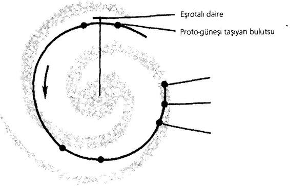

TERSİNE EVRİM
21. yüzyıl askerî tarihine ilişkin (kaynaklarımı ifşa etme iznimin olmadığı) birtakım belgeler edindikten sonra, her şeyden önce içerdikleri bilgiyi nasıl gizleyeceğimi kara kara düşünmeye başladım. Gizlilik, en önemli sorundu; çünkü anlamıştım ki, bu tarihi bilen kişi, bulduğu hazineyi hayatıyla birlikte yitirebilecek savunmasız bir kâşiften farksızdı. Bu gerçekleri elinde bulunduran tek kişi olmamı ise, Dr. R. G.'nin bana ödünç verdiği ve vakitsiz ölümünden hemen önce kendisine geri verdiğim kitaplara borçluyum. Bildiğim kadarıyla onları yaktı, böylece sırları da kendisiyle birlikte mezara götürdü.
Sessizlik en kolay çözüm gibi görünüyordu. Sessizliğimi korursam kellemi kurtarabilirdim. Ancak, gelecek asrın siyasî tarihini ilgilendiren, insan yaşamının her alanında yeni ufuklar açacak bilgilerin üzerine çöreklenmek de utanç duyulacak bir şeydi. Yapay zekâ alanındaki -tamamen beklenmedik- dönüşümü ele alalım örneğin: Yapay zekâ artık başlı başına bir güç haline gelmiştir, çünkü insan zekâsının salt mekanik bir kopyası olmanın ötesindedir. Her neyse, güvenliğim için sessiz kalsaydım, kendimi, elimdeki bilgilerin sağlayacağı bütün avantajlardan ilelebet mahrum bırakacaktım.
Derken, aklıma başka bir fikir geldi: Bu ciltlerden hatırladıklarımı yazıp elyazmasını da bir banka kasasına yerleştirmek. Bu durumda aklımda kalan her şeyi yazmam gerekecekti, çünkü zaman geçtikçe böylesi geniş bir konunun pek çok ayrıntısını unutabilirdim. Sonra hafızamı tazelemek isteyince kasamı ziyaret edip orada not alabilir ve elyazmasını tekrar sağlam kasama yerleştirebilirdim. Fakat bu da tehlikeliydi. Birileri beni izleyebilirdi, ayrıca günümüzde hiçbir banka kasası yüzde yüz güvenli değildi. Zekâ düzeyi düşük bir hırsız bile er ya da geç, eline geçirdiğinin ne denli olağanüstü bir belge olduğunu anlardı. O elyazmasını yok etse bile bundan habersiz olacağım için, 21. yüzyılın tarihiyle şahsım arasındaki bağlantının ortaya çıkacağı korkusunu her daim duyarak yaşayacaktım.
Açmazım, sırlar nasıl hem sonsuza kadar saklayıp, hem de getirecekleri avantajlardan serbestçe yararlanabileceğim, yani onları dünyadan saklarken kendimden saklamamanın yolunu nasıl bulabileceğim noktasındaydı. Uzun uzun düşünüp taşındıktan sonra bunun kolayca başarılabileceğini fark ettim. Her kelimesi gerçek olan çarpıcı bir düşünceyi gizlemenin en kolay yolu, onu bir bilimkurgu kılığında yayımlamaktı. Tıpkı bir yığın kırık camın ortasındaki elmasın ayırt edilememesi gibi, bilimkurgu safsatalarının içine yerleştirilmiş bir ifşaat da onların rengine bürünecek, taşıdığı risk ortadan kalkacaktı. llk olarak -yine de ürkekçe- sahip olduğum sırrın çok mütevazı bir kullanımına yöneldim. 1967 yılında Efendisinin Sesi adlı bilimkurgu romanı yazdım (1983'te Harcourt Brace jovanovich tarafından İngilizce basımı yapıldı). Bu baskının 125. sayfasında üstten üçüncü satırda şu sözler yer alıyordu: “hakim doktrin... 'dolaylı ekonomik bombardıman'dı” ve sonrasında bu doktrin şu aforizma ile açıklanıyordu: “Şişmanlar zayıflayana kadar zayıflar açlıktan ölür.”
1980'de Amerika'da -Efendisinin Sesi' nin orijinal baskısından 13 yıl sonra- doktrin biraz farklı bir şekilde kamuoyunun karşısına çıktı. (Batı Alman basını den Gegner totrüsten sloganını kullanmıştı, “düşmanını ölümüne silahlandır”.)
Öncelikle benim fantezi kurmacarnın sonraki siyasal gelişmelerle nasıl da örtüştüğünü kimselerin farketmediğinden emin oldum; kitap çıkalı epey bir zaman olmuştu. Sonraları, daha gözüpek kesildim. Hakikatin kurmaca içine yerleştirilmesinin mükemmel bir kamuflaj sağladığını, hatta bu yöntemle güvenli bir biçimde itiraf edilebildiğini anladım. Böyle yayımlandığında kimse yazdıklarımı ciddiye almıyordu. Öyleyse çok önemli bir belgeyi gizli tutmanın en iyi yolu, onu popüler bir kitabın içinde eritmekti.
Sırrımın güvenliğini böylece sağlama aldıktan sonra, şimdi huzurla eksiksiz bir rapor sunmaya koyulabilirim. Kendimi, 2105 yılında basılan, 21. Yüzyılın Silahlanma Sistemleri: Tersine Evrim adlı kitabın ilk iki cildiyle sınırlayacağım. Size (henüz doğmamış olan) yazarların isimlerini verebilirim, fakat bu neyi değiştirir? Çalışma üç ciltten oluşmaktadır. llki, 1944 yılından başlayarak silahların gelişimini sunuyor; ikincisi nükleer silahlanma yarışının, silah üretimini savunma sanayiinden savaş sahasına taşıyarak savaşı nasıl “insansızlaştırdığını” anlatıyor; üçüncüsüyse bu büyük askerî devrimin dünyanın müteakip tarihi üzerindeki etkisiyle ilgili.
ll
Hiroşima ile Nagazaki'nin bombalanmasının hemen akabinde Amerikalı nükleer araştırmacılar Atom Bilimcileri
Bülteni'ni (Bulletin of the Atomic Scientists) yayımladılar. Bültenin kapağında, geceyarısına on dakika kaldığını gösteren bir saat resmi vardı. Altı yıl sonra hidrojen bombasının ilk denemesinin başarılı olmasıyla birlikte yelkovanı beş dakika daha ilerlettiler. Ne zaman ki Rusya termonükleer silahları geliştirdi, yelkovan üç dakika daha ilerledi. Bir sonraki aşama, uygarlığın sonu anlamına gelecekti. Bültenin doktrini “ya tek dünya ya hiç”ti. Dünya ya birleşecek ve kurtulacak, ya da topyekun yok olacaktı.
Okyanusun iki yakasındaki nükleer gelişimin seyriyle ve giderek kusursuzlaşan balistik füzelerin çok daha yüklü miktarlarda plutonyum ve trityum içermeleriyle birlikte “bombanın babası” sayılan bilimadamlarından hiçbiri -zaten yerel savaşlarca tehdit edilen- barışın, bu yüzyılın sonuna kadar dayanabileceğine ihtimal vermiyorlardı. Atom silahları Klauswitz'in meşhur tanımlamasına yeni bir açılım kazandırmıştı: “Savaş, siyasal etkinliğin farklı araçlarla sürdürülmesidir.” Çünkü artık, saldırı tehdidi bile saldırının yerini alabiliyordu. Böylelikle karşılıklı caydırıcılık denilen, sonradan 'terör dengesi' olarak adlandırılan doktrin doğdu. Farklı Amerikan hükümetleri bunu farklı başlıklar altında sundular. Örneğin, “ikinci saldırı” (saldırıya uğrayan ülkenin misilleme yapabilecek güçte olması) ilkesine dayanan “Karşılıklı Tahrip Eşitliği” (KTE). Tahrip sanatına ilişkin kelime haznesi sonraki yıllarda iyice zenginleşti. “Toplu Stratejik Mübadele” vardı örneğin, tüm gücü nükleer savaşa seferber etme anlamına geliyordu. “Bağımsız Hedeflere Kilitlenen Çok Başlıklı Aygıt”, aynı anda her biri değişik hedeflere yönelik birden fazla başlık ateşleyebilen bir füzeydi. “Sızma Destekleri” (SIZTEK), karşı tarafın radarını şaşırtmak için atılan yalancı maket füzelerdi. “Manevralı Hedefleme” füzesi ise, karşı füzelerden kaçabilir ve programlanan “sıfır-zemin hedefi” 50 fit dahilinde vurabilirdi. Her neyse, bu kadarı yeter. Burada birbirine benzeyen yüzlerce terimi sıralamak imkânsız.
“Eşitlik”in bozulduğu her koşulda nükleer savaş tehlikesinin artmasına ve bu nedenle çokuluslu denetim altında eşitliği korumanın tek akılcı yolu gibi görünmesine rağmen, rakip güçler tekrarlanan zirvelerde bir görüş birliğine varamadılar.
Silahlanma Sistemleri kitabının yazarlarının iki gruba ayırdığı birçok neden vardı. İlk gruptaki nedenler, uluslararası politikada geleneksel düşünüşün baskısıydı. Geleneklere göre taraflar barış çağrısı yaparken bir yandan da savaşa hazırlanmalıydı, ta ki mevcut denge altüst edilip üstünlük kazanılana dek. İkinci grupta yer alan nedenler ise, gerek siyasî gerek gayri siyasî açıdan insan düşüncesinden bağımsız birtakım faktörlerdi. Bunlar geniş çapta uygulanan silahlanma teknololojisinin evrimiyle ilgiliydi.
Silahlanma teknolojisindeki gelişmelerin doğurabileceği her olasılık, “biz yapmazsak onlar yapacak” ilkesine bağlı olarak, gerçeğe dönüştü. Bu arada nükleer savaş doktrini de bir dizi değişiklikten geçti. Bir süre için, nükleer saldırının karşılıklı olarak sınırlandırılması savunuldu (hiç kimse sınırlandırmanın nasıl garanti edileceğini bilmese de). Bir başka dönemde doktrin, düşmanın toplu imhası biçimini aldı (düşman tanımına giren bütün ülkelerin insanları, bir nevi “rehin” durumuna düşmüşlerdi). Bir başka seferdeyse öncelik, düşmanın askerî ve endüstriyel gücünün tahribine verildi.
Eskilerin yasası olan “kılıç ve kalkan”, silahlanmanın evriminde hâlâ hâkim durumdaydı. “Kalkan”, üzerinde füze konuşlandırılan yeraltı istasyonları biçimini alırken, kalkanı delecek “kılıç” da, füzelerin isabetliliğini artırma, sonra da onları hedefe kilitlenme ve manevra yapma yeteneği ile donatma biçimini almıştı. Nükleer donanımlı denizaltılar için “kalkan” okyanustu; sualtı saptamalarındaki gelişmiş yöntemler de “kılıç”larıydı.
Savunma tekniklerindeki ilerleme, uzaya yolladığı uydu “gözleri”yle, füzeleri kalkış anında saptayabilecek, dünya çapında bir keşif gücü yarattı. Yeni kılıcın -katil uydunun-delmek zorunda olduğu kalkan buydu. Kılıç bu işi, savunmanın gözlerini kör eden bir lazerle ya da füzeleri atmosferin üzerindeki seyirlerinde tahrip edecek yıldırım benzeri dalgalardan oluşan yoğun güç sayesinde başaracaktı.
Fakat bu gittikçe şiddetlenen çatışmaya yatırılan milyonlarca dolar, kesin -dolayısıyla değerli- bir stratejik üstünlük kurma noktasında, boşa gitti. Bunun çok farklı, birbiriyle neredeyse tamamen ilgisiz iki nedeni vardı.
Birincisi, bütün bu ilerlemeler ve yenilikler, gerek taarruz gerek savunma açısından, stratejik güvenliği artıracağı yerde daha da azalttı. Evet, azalttı, çünkü süper güçlerin kendi sistemleri karmaşıklaştıkça karmaşıklaştı. Bu sistemler karada, denizde, havada ve uzayda kurulu olan ve sayıları giderek artan farklı alt sistemlerden oluşuyordu. Operasyonlarda doğru zamanlamayı yakalayarak başarı sağlamak için, hatasız bir iletişim ağına gerek vardı. Fakat ne yazık ki, karmaşık sistemlerin -ister teknolojik ister biyolojik olsun, ister hammaddeyi ister bilgiyi işleme soksunlar- hepsinde aksaklık olasılığı, sistemi oluşturan parçaların sayısıyla doğru orantılıdır. Yani, silah teknolojisindeki gelişimin bir paradoksu vardı: Üretilen silahlar karmaşıklaştıkça, silahın başarısında şans faktörü de o denli önem kazanıyordu.
Bu temel sorun dikkatle açıklanmalı, çünkü uzun bir zaman boyunca uzmanlar teknoloji ile karmaşık sistemlerdeki rastlantı olgusu arasında bağ kurmakta zorlandılar. Bu sistemlerdeki arızaları önlemek için mühendisler, ilk Amerikan uzay mekiği Kolombiya'da olduğu gibi aşırı tedbir önerdiler; fazladan güç sistemleri ya da çift hatta dörtlü paralel bilgisayar sistemleri. Kesin güvenilirlik, ulaşılamazdı: Eğer bir sistem milyonlarca parçadan oluşuyorsa ve her parçanın, milyonda bir bile olsa arızalanma ihtimali varsa, demek ki arıza kesindir.
Bilindiği üzere hayvanlar ve bitkiler, her biri ayrı işlevlere sahip trilyonlarca parçadan oluşmaktadır. Yine de yaşam, kaçınılmaz hata olgusuyla hakkıyla başa çıkmaktadır. Ne yolla? Uzmanlar buna, güvenilmez bileşenlerden güvenilir sistemlerin yapılanması adını veriyorlar. Doğal evrim, organizmanın yanılma payını nötralize etmek için çeşitli taktiklere başvurur: Kendini yenileme ve onarma kapasitesi, fazladan organlar (bu nedenle bir değil bir çift akciğerimiz var, bu nedenle yansı tahrip olmuş bir karaciğer bile hâlâ vücudun merkezî kimya laboratuarı olarak işleyebilir ve bu nedenle dolaşım sistemimizde o denli çok kılcal damar ve atar damar vardır), ve psişik ve somatik kontrol merkezlerinin ayrı olmasıdır. Bu olgu, beyin üzerinde araştırma yapanlara pek çok sıkıntı yaşatmıştır. Araştırmacılar ciddi şekilde yaralanmış bir beynin nasıl olup da işlev görmeye devam ettiğini, buna karşılık bir bilgisayarın, hafif bir zarar gördüğünde bile neden programlara uymayı reddettiğini çözememektedirler.
21. yüzyıl mühendisliğinde kullanılan, kontrol merkezlerini iki katına çıkarmakla sınırlı kalan yöntem, sıra uygulamaya geldiğinde tam bir saçmalık yarattı. Uzak bir gezegene giden otomatik bir uzay aracı şayet mekiklerdeki gibi sayısı artırılmış pilot bilgisayarların yönetim esasına göre inşa edilmişse, o zaman uçuş esnasında dört ya da beş değil, muhtemelen elli bilgisayardan oluşması gerekecekti.
Bu bilgisayarlar “doğrusal mantık”la değil, “seçim” usulüyle iş göreceklerdi. Şöyle ki, bilgisayarlar sonuçlarda uyuşamadıkları ve böylelikle eşgüdümlü çalışmayı durdurdukları anda “çoğunluk” tarafından ulaşılan nokta doğru sonuç olarak kabul edilmeliydi. Fakat bu tür bir “mühendislik parlamentarizmi” demokrasilere özgü dertlerden mustarip devlerin üretilmesine yol açtı. Böylesi bir çoğulculuğa, programlanmış esnekliğe bir sınır konmalıydı.
Sonra 21. yüzyıl uzmanları, birkaç milyon yıllık varlığıyla stratejik mühendisliğe ideal bir örnek teşkil eden biyolojik evrimden ders çıkarma noktasında ne denli geciktiklerini itiraf ettiler. Öyle ya, canlı organizma ne “totaliter merkeziyetçilik”le ne de “çoğulcu demokrasi”yle yönetilmekteydi. Bilakis, çok daha karmaşık bir stratejisi vardı. Basitleştirirsek, bu sistemi, kontrol merkezlerinin ayrımı ve birleşmesi ilkeleri arasında kurulmuş bir denge olarak tanımlamak mümkündür.
Bu arada 20. yüzyılın son dönemine ait silahlanma yarışında şans faktörünün rolü arttı. Yenilgiyi zaferden ayıran süre saatler (ya da günler) ve uzaklık da miller (ya da yüzlerce mil) olduğunda, hatalı bir emir, düşmanın silah depolarına saldırıp geri çekilerek ya da karşı saldırı düzenleyerek telafi edilebilir. O zaman şans faktörünün rolünü azaltmak olanaklıdır. Ancak, ne zaman ki mikromilimetre ve nanosaniyeler savaşın akıbetini belirlemeye başlar, o zaman şans da tıpkı Savaş Tanrısı gibi sahneye çıkar, zafere ya da yenilgiye karar verir, atomfiziğin mikroskopik ölçeğinden çıkıp büyütülmüştür. En hızlı, en iyi silah sistemleri, Heisenberg'in hiçbir şekilde alt edilemeyecek “belirsizlik ilkesi”ne toslar, çünkü bu ilke evrendeki maddenin temel karakteristiğini açıklamaktadır. Üstelik keşif uydularında ya da lazer ışınıyla saldırıyı savuşturan savunma başlıklı füzelerde bir arıza olması da şart değildir; eğer elektronik savunma tuşları, meslektaşları olan saldırı tuşlarına yanıt vermekte saniyenin milyarda biri kadar bir zaman bile gecikirse, bu, “son karşılaşma”nın akıbetine karar vermek üzere zarın fırlatılmasına yeter de artar.
Gezegenin rakip süper güçleri, bu durumun farkında olmadan, iki ters strateji geliştirdiler. Bunlara “bistüri” ve “çekiç” adı verilebilir. Füze yığınağının megatonajındaki sabit şiddetlenme “çekiç”ti; saptama ve uçuş anında tahrip gücündeki artışsa “bistüri”ydi. “Ölülerin intikamı” düşüncesinin caydırıcılığına da bel bağladılar: Düşman, yenerken bile, yok olacağını bilecekti, çünkü tümüyle yerle bir edilmiş bir ülke bile -otomatik olarak ve insana gerek olmaksızın-yenilgisini tüm dünyaya mal edecek bir saldırıyla karşılık verebilirdi. İşte, silahlanma yarışı böyle bir yönde ilerliyordu; kimsenin istemediği ama kimselerin nasıl durduracağını da bilemediği böylesi bir doğrultuda gidiyordu.
Bir mühendis, çok büyük ve karmaşık bir sistemde hata payını nasıl en aza indirger? Denemeler yapar, zayıf parçaları ve bağlantıları bulmaya çalışır. Fakat dünya çapında bir nükleer savaş başlatmak üzere tasarlanmış bir sistemi, yerüstünde, denizaltında, havada ve uyduda füzelere, karşı füzelere ve çok sayıda komut ve iletişim merkezine sahip bir sistemi, muazzam tahrip edici güçlerini, atom bombalarını karşılıklı fırlatmaya hazır bir sistemi test etmenin hiçbir yolu yoktur. Hiçbir manevra, hiçbir temsilî görünüm, böylesi bir savaşın gerçek koşullarını yaratamaz.
Özellikle karar verme işlevi açısından (bombalama kararı, saldırının yeri ve zamanı, el altında bulundurulacak güç ve göze alınacak riskler konusundaki kararlar), operasyonların hızının artırılması, yeni silah sistemlerine damgasını vuran bir hedef oldu. Bu hız artışı, hesaplanamaz faktör olarak şansı devreye soktu. Işık hızına yakın sistemler, ışık hızına yakın hatalar yaptılar. Bir bölgenin, büyük bir metropolün, bir fabrikanın, büyük bir donanmanın korunması ya da yok olması, saniyeden bile az bir süre içinde belirlendiğinde, askerî açıdan kesinlik sağlamak imkânsızdı. Hatta zaferin yenilgiden ayırt edilebilir bir yanı kalmadığı bile söylenebilir. Silahlanma savaşı, tek kelimeyle gözü kara bir savaşa dönüşmüştü. Eski zamanların savaşlarında, şövalyeler at sırtında çarpışır ve piyadeler göğüs göğüse gelirken, insanların ve birliklerin hayatta kalıp kalmayacağı şansa bağlıydı. Fakat bilgisayarda vücut bulmuş elektronik güç, bütün orduların ve ulusların kaderini şansa bırakmıştır.
Dahası -üstelik bu başlı başına bir sorundu- yeni silahlar öyle çabuk yaygınlaştı ki, sanayi bunlara ayak uyduramadı. Kontrol sistemleri, hedefleme sistemleri, kamuflaj ve iletişim ağları kurulması, sözümona 'konvansiyonel' silahların (bu gerçekten tarihi geçmiş ve yanıltıcı bir terimdir) bombalama yeteneği, vb., bunların hepsi de piyasaya sürülmelerinden çok önce çağdışı oldular.
İşte bu nedenledir ki, l 980'lerin sonlarına doğru üretim, daha çok savaş uçaklarına ve bombalara, radar güdümlü füzelere, füzesavarlara, casus uydulara, denizaltı lazer silahlarına, sonarlara ve radarlara yönelmiştir. Yine bu nedenle ilk modeller terkedilmek zorunda kalınmış ve dev bütçelere, yığınla insanın emeğine malolan silahlar konusunda yoğun siyasî tartışmalar başlamıştır. Her yeniliğin bir öncekine kıyasla çok daha pahalıya malolduğu görülmüş, hatta çok geçmeden bu yenilikler zarar hanesine yazılıp kullanımdan kaldırılmıştır. Bu tablo, hiç kesintisiz devam etmiştir. Açıktı ki, yenilik kendi başına bir çözüm getirmiyordu; önemli olan, yeniliğin endüstriyel uygulamaya getireceği hızdı. Bu olgu, yeni yüzyılın eşiğinde silahlanma yarışının son paradoksu oldu. Bunun askerî açıdan yarattığı büyük masrafları telafi etmenin yegâne yolu, 8 ya da 12 yıl sonrasının değil, çeyrek yüzyıl sonrasının silahlarını tasarlamaktı, bu da günümüz dehalarının bilgi sınırları dışında kalan icatlar gerektiren, düpedüz imkânsız bir işti.
20. yüzyılın sonunda ne bir atom bombası ne de lazer silahı olan, her ikisinin melezi niteliğinde yeni bir silah fikri ortaya çıktı. O zamana değin, ya füzyon (atomik parçalanma) esasına (uranyum, plütonyum) ya da fizyon (kaynaşma) esasına (termonükleer, hidrojen, plutonyum) dayanan bombalar vardı. O eski bildik bomba, nükleer bağları kopararak, mümkün olan her tür radyasyonu açığa çıkarıyordu: Gama ışınları, X ışınları, ısı, toz çığı ile ölümcül derecede yüksek enerjili parçacıklar. Ateş topu, milyonlarca derecelik ısısıyla, tüm dalga boylarında enerji yayıyordu. Birinin dediği gibi, “madde, kusabileceği her şeyi son zerresine kadar kusuyordu”. Askerî açıdan bu, müsriflikti, çünkü hedef bölgede tüm nesneler alev alan plazmaya dönüşüyor, her şey bir gazın atomları tarafından elektronlarına varasıya parçalanıyordu. Patlama mahallinde kayalar, ağaçlar, evler, metaller, köprüler ve insan bedenleri buharlaşıyor, harç ve kum, alevden bir mantar şeklinde stratosfere yükseliyordu. “Dönüştürme bombaları” bu silahın daha etkili bir biçimiydi. Herhangi bir durumda startejistlerin neye ihtiyacı varsa, onu salıyordu: Bazen katı radyasyon -sadece canlı nesneleri bombaladığı durumda ona “temiz bomba” deniyordu-, bazen de termal radyasyon - bu da yüzlerce kilometrelik bir alan üzerinde ateş fırtınalarına yol açıyordu.
Lazer bombasıysa gerçek bir bomba değildi. Gücünün büyük bir bölümünü, sözgelimi bir şehri, bir roket sahasını ya da başka önemli hedefleri (düşmanın uydu savunma ekranı gibi) yakıp kül edebilecek bir ışına odaklayan (yüksek bir yörüngeden) tek seferlik bir lazer silahıydı. Işın, aynı zamanda lazer bombasının kendisini de yanan küçük parçacıklara dönüştürüyordu. Fakat bu tür silahlar hakkında daha fazla detaya girmeyeceğiz, çünkü herkesin daha çok şiddetlenmesini beklediği bu yarışa, nasıl olduysa bir nokta kondu.
Yine de 20. yüzyıl dünyasının nükleer güç yığınakları, tarihsel bir bakış açısıyla iredelenmeye değer. 1970'lerde bile gezegenin tüm sakinlerini birkaç kez öldürmeye yetecek kadar silah vardı. Bu sınırsız tahrip gücü karşısında uzmanlar “meşru müdafaadan” ya da kendi stoklarını korurken düşmana ikinci bir saldırı yapmaktan yana oldular. Elbette halkın can güvenliği önemliydi, ama bu güvenlik öncelikler açısından ikinci sırada yer alıyordu.
1950'lerin başında Atom Fizikçileri Bülteni, içinde bombanın babaları Berthe ve Szilard gibi fizikçilerin de olduğu bir tartışma açtı. Nükleer savaş olgusunda sivil savunmanın önemine değiniliyordu. Gerçekçi çözüm, şehirleri tahliye etmek ve dev yeraltı sığınakları inşa etmek gibi görünüyordu. Berthe, böylesi bir projenin ilk aşamasının bedelini 20 milyar dolar olarak belirledi, elbette sosyal ve psikolojik bedeller tahminlerin çok ötesindeydi. Zaten çok geçmeden anlaşıldı ki “mağaraya dönüş” bile insanların hayatını kurtarmayı garantileyemezdi. Çünkü silahlanma yarışı, daha güçlü savaş başlıkları, daha kusursuz füzeler üretmeye devam ediyordu. Günün bilim kurgusu, içi dışına çıkmış şehirlerin arasında, çürümüş insan kalıntılarının ot gibi yaşadığı, hüzünlü ve kâbus dolu sahneler yarattı. Nevi şahsına münhasır her gelecekbilimci (ki hepsi de birbirinden özgündü) var olan nükleer silah depolarından yola çıkarak, gelecekteki depoların çok daha ürkütücü olacağı kehanetini ortaya atmakta ötekilerle yarıştı. Bu tür tahminler içinde en bilineni Herman Kohn'un hidrojen savaşına ilişkin bir makalesi -”Düşünülemez Olanın Düşünülmesi” idi. Kohn aynı zamanda bir “kıyamet makinesi” de tasarlamıştı. Kobalt bir kılıf geçirilmiş muazzam miktarda nükleer güç, bir ulus tarafından, dünyanın geri kalanına “gezegenin toplu intiharı” şantajını yapmak için, kendi topraklarının derinliklerine gömülebilirdi. Sonuçta hiç kimse politik çatışmaların hâlâ inatla sürdüğü bu koşullarda, atom silahları çağının, dünya barışı ya da dünyanın topyekün imhası seçeneklerinden birisi ger çekleşmeksizin sona ereceğini düşünmüyordu.
21. yüzyılın ilk yıllarında, kuramsal fizikçiler, dünyanın varlığını sürdürmesi açısından can alıcı sayılan bir soru üzerinde düşünmeye başladılar: Uranyum 235 ve plutonyum gibi uranidlerin kritik kütlesinin (ki bu başlatılan bir zincirleme reaksiyonun nükleer patlamaya yol açtığı kütleydi) mutlak bir sabit olup olmadığı sorunu. Çünkü eğer kritik kütleye bir etki yapılabilseydi özellikle uzun menziller açısından tüm savaş başlıklarını etkisiz hale getirme şansı olabilirdi. Göründüğü kadarıyla (bir önceki yüzyılın fizikçilerinin bu konuda kaba bir düşünceleri vardı) kritik kütle değiştirilebiliyordu. Belirli bazı fiziksel koşullar altında, patlayıcı kritik bir güç, kritik olmaktan çıkarılmış, böylelikle patlamamıştı. Fakat böylesi koşulları yaratmak için gerekli olan enerji miktarı, tüm atom silahlarının bileşiminde içerilen güçten çok daha büyük olmak zorundaydı. Atom silahlarını nötralize etmeğe yönelik bu girişimler dolayısıyla başarısız kaldı.
lll
1990'larda, halk arasında F-F (Fire and Forget: Ateşle ve Unut) diye adlandırılan yeni bir tip füze ortaya çıktı. Programlanmış bir mikrobilgisayar tarafından yönlendirilen füze, fırlatıldıktan sonra kendi hedefini arıyordu. Bir kez faaliyete geçtikten sonra tam anlamıyla kendi başına kalıyordu. Aynı zamanda “insansız” casusluk da, ilkin sualtında olmak kaydıyla, kullanıma girdi. Hafıza ve alıcıyla beslenmiş bir sualtı mayını, üzerinde yüzen gemilerin hareketlerinin izini sürebiliyor, ticari yükleri askeri varillerden ayırdedebiliyor, tonajları saptıyor ve gerektiğinde bilgiyi kodlayarak merkeze iletiyordu.
Muharebeye hazır olma ilkesi, özellikle de gelişmiş ülkelerde, geçerliliğini yitirdi. Askerlik yaşına gelmiş genç insanlar bir zamanlar onurlu sayılan dulce et decomm est propatria mori4 gibi deyişleri tamamen gülünç bulmaya başladılar.
Bu arada, yeni silah türlerinin maliyeti de hızla artıyordu. Birinci Dünya Savaşı uçağı, bez, tahta ve piyano' teli kullanılarak yapılmış, birkaç makineli silahla, yerden kalkış donanımından oluşmuştu ve hepsi hepsi iyi bir otomobil fiyatı kadardı. İkinci Dünya Savaşı'na ait benzer türde bir uçaksa, 30 otomobil fiyatı ediyordu. Yüzyılın sonuna gelindiğine avcı jetinin ya da radar kontrol donanımlı bir “Stealth” bombardıman uçağının fiyatı yüz milyonlarca dolar ediyordu. 2000 senesi başında bir savaş jetinin bir milyar dolar olması bekleniyordu. Bu durumda, gelecek 80 yılın bitiminde, her süper güç, bütçesiyle ancak 20-25 yeni uçağı karşılayabilecekti. Tanklar da daha ucuz değildi. Tarih öncesi çağlardan kalma kısa boynuzlu dinozorlara benzeyen (özellikle ateş altındayken) nükleer donanımlı bir uçak gemisi, birkaç milyar dolar ediyordu. Üstelik bu taşıyıcı, bir F-F süper roketinin tek bir saldırısıyla batırılabilir, F-F, her biri bu dev okyanus canavarının farklı sinir merkezlerini hedefleyecek şekilde çok sayıda özel savaş başlığı gönderebilirdi.
Tam da bu zamanlarda mikroyonga üretimi durduruldu, genetik mühendisliğin son ürünlerinden biri onların yerini aldı. Sibernetiğin yaratıcısı Norbert Wiener'den esinlenen Silocobacter Wieneri adlı grup, silikatlardan, gümüşten ve gizli bir maddeden oluşan bir solüsyonda, sinek yumurtasından daha küçük katı devreler üretti. Bu elementlere “eser parça” denildi; dört yıllık seri üretimin ardından bir avuç dolusu elementin bedeli aynı miktardaki mısırın bedeline eşit hale getirildi. Bu yolla, yani iki eğrinin -ağır silah ların maliyetinin yükselen eğrisiyle, yapay zekâ maliyetinin düşen eğrisinin- kesişmesi sayesinde, askeriyenin “insansızlaştmlması” gündeme geldi.
Ordular, canlı güçlerden cansız güçlere dönüşmeye başladı. Önceleri, değişimin etkileri fazla hissedilmedi. Durum tıpkı otomobil mucitlerinin, ilk ortaya çıkışlarında at arabasına çok yeni bir biçim verememeleri, sadece koşum takımlannı kaldırıp, içten yanma motoru eklemelerine benziyordu. Aynı şekilde havacılığın en eski öncüleri de, uçan araçlarına kuş kanadını taklit eden kanatlar takmışlardı. Askeriyenin bu zihni ataletine şükran borçluyuz, neyse ki çok fazla radikal füze, insansız tank ve hedefe kilitlenen ağır silah, ebadı küçültülüp bilgisayar komuta-kontrol modülleri eklenerek “mikrosilikon asker”e uyarlanmadı. Zaten bunların modası çoktan geçmişti. Bu yeni cansız mikro-asker, taktik, strateji ve tabii ki en iyi hangi tür silahları kullanıma sokması gerektiğine ilişkin bütünüyle yeni bir yaklaşım gerektiriyordu.
Bu, tam da dünyanın iki ekonomik krizden yavaş yavaş sıyrılmakta olduğu bir sürece denk geldi. İlkine OPEC kartelinin kurulması ve ham petrol fiyatlarındaki büyük artış neden olmuşken, ikincisine OPEC'in batması ve petrol fiyatlarındaki ani düşüş yol açmıştı. İlkel nükleer enerji santralleri işlevlerini yerine getirmelerine karşılık, hava ve kara taşıtlarına yakıt sağlamakta yetersiz kalıyorlardı. Bu nedenle, erat taşıyıcıların, büyük topların, füzelerin, kamyon, tank ve denizaltıların -20. yüzyılın son model ağır silahlarının hepsini saymaya gerek yok- maliyeti sürekli artıyordu. Üstelik erat nakliye araçlarının daha o zamanlarda taşıyacak insan bulamamasına ve çok geçmeden topları ateşleyecek kimse bulunamayacak olmasına karşın.
Askeri silahlanmadaki muazzam gelişmenin son aşaması, yapay zekâsızlık sloganıyla mikrominyatürleştirme dönemine yol açtı. Gariptir; bilişimciler, mikroyonga teorisyenleri ve diğer uzmanlar öncüllerinin bunca süredir yapay zekâ yaratma çabasında nasıl bu denli kör olabildiklerine hayret” ettiklerinde, yıl sadece 2040'tı. Gerek beyaz gerekse de mavi yakalı mesleklerde çalışan % 97,8'lik insan nüfusu ifa ettiği görevlerin ezici çoğunluğu bakımından zekâya gerek duymuyordu. Neye mi gerek duyuyordu? Dutuma uygun bir talimatname, beceri, dikkat ve girişim ruhu. Tüm bu nitelikleri ise, böceklerde bulmak mümkündü...
Örneğin; Sphecidea familyasından bir eşek arısı kendine bir cırcır böceği bulur, onu öldürmeyip felç ederek sinir sistemine bir zehir akıtır. Sonra kuma bir barınak kazar ve kurbanını yanına yerleştirir, barınağa girerek işe yaradığından emin olur, karıncalara ya da rutubete karşı korunaklı olup olmadığına bakar, sonra cırcır böceğini ittiriverir, yumurtasını bırakır ve süreci aynen tekrarlamak üzere uçup gider. Eşek arısının larvası cırcır böceğinin canlı bedeninden beslenir, ta ki uçabilecek hale gelene değin. Böylelikle eşek arısı, kurbanının seçimi ve onun uyuşturulması süreci açısından mükemmel bir tatbikat sergiler. Korunaklı bir yer hazırlarken becerisini, koşulların yavrusu için elverişli olup olmadığını kontrol ederken de dikkatini kullanmıştır, ayrıca bir dizi faaliyeti hayata geçirmekle girişimci bir ruha sahip olduğunu kanıtlar.
Eşek arısı, bir yük kamyonunu bir limandan uzak bir şehre taşıyabilecek ya da kıtalararası nakliyat yapan bir rokete rehberlik edebilecek kadar sinir dokusuna sahip olabilirdi. Tek sorun onun sinir sisteminin doğal evrim tarafından tamamen farklı görevlere yönelik olarak programlanmış olmasıdır.
Bilişim ve bilgisayar alanlarında çalışan bilimadamları insan beyninin işlevlerini bilgisayarlarda taklit etmek için kuşaklar boyunca boş yere uğraştılar. İnsan beyninden milyon kat daha basit, inanılmaz derecede küçük ve dikkate değer bir güvenilirlikle işleyen bir mekanizmayı gözardı ettiler. Programlama için başlangıçtan itibaren, pekâlâ, yapay zekâ değil, yapay içgüdü taklit edilebilirdi. İçgüdü, zekâdan aşağı yukarı bir milyar yıl önce ortaya çıkmıştır, bu da göstermektedir ki üretilmesi çok daha kolaydır.
21. yüzyılın ortalarına gelindiğinde akılsız böceklerin sinir sistemini ve sinirsel anatomilerini inceleyen uzmanlar, muhteşem sonuçlar elde etmekte gecikmediler. Onların öncülleri, arılar gibi görünüşte ilkel böceklerin, kalıtımla devraldıkları bir dile sahip oldukları ve bu dil aracılığıyla işçi arıların yeni keşfedilen bir çiçek özünün konumu hakkında kovanda birbirlerini bilgilendirebildikleri olgusunu küçümsemekle gerçekten körlük etmişlerdi. Anlar, işaret-mimik-pandomim aracılığıyla gidilecek yönü, çiçek özüne ulaşmak için gerekli zamanı ve hatta özün miktarını bile iletebiliyorlardı.
Elbette söz konusu olan, sinekleri, eşek arılarını, örümcekleri ya da arıları bilgisayar çiplerinde taklit etmek değildi; önemli olan, yönelimli davranış ve programlı hedeflemenin başat nitelik olduğu sinirsel anatomileriydi. Sonuç, savaş meydanlarını tümüyle ve geri dönülmez bir biçimde dönüştüren bir bilimsel teknolojik devrim oldu. O zamana dek, tüm silahlar insana uymak üzere tasarlanmıştı; bileşenlerine de insan anatomisine ve fizyolojisine göre şekil verilmişti; böylelikle insan daha kolay öldürebilir, daha kolay öldürülebilirdi.
Genelde olduğu gibi, bu karmaşık yeni eğilimin ilk işaretleri 20. yüzyılda kendini göstermişti, fakat o zamanlar kimse bunları alışılmadık bir sentezde bütünleştiremiyordu; çünkü silah sistemlerinin insansızlaşmasına olanak sağlayan buluşlar, tamamıyla farklı alanlarda gerçekleşmekteydi. Askerî uzmanların böceklere yönelik hiçbir ilgisi yoktu -savaş zamanı askerlere musallat olan bitleri ve pireleri saymazsak tabii. Böcekbilimciler ve nörologlarla birlikte böceklerin sinir sistemini inceleyen bilgisayar mühendisleri ise, askeri sorunlar hakkında bir şey bilmiyorlardı. Politikacılara gelince... Ne yalan söylemeli, onların zaten herhangi bir şey hakkında bir şey bildikleri çok şüpheliydi.
Bu nedenle bir yandan bilgisayar mühendisleri, sivrisineklerin ve eşek arılarının sinir sistemleriyle yarışacak boyutlarda hesap makineleri geliştirirken, yapay zekânın ateşli taraftarlarının çoğu, hâlâ pek parlak zekâlı olmayan insanlarla aptalca tartışmalar yürüten bilgisayarlar programlamakla meşguldü. Bu arada bilgisayar türlerinin mamud ve dinozor nesilleri de, satranç ustalarını, onlardan daha zeki olduklarından değil, sadece verileri Einstein'dan milyar kez daha hızlı işleme sokabildiklerinden yeniyorlardı. Uzun bir süre kimse sıradan bir sınır koruma askerinin gereksinim duyduğu yegâne şeyin, bir arının becerisi ve cesareti olduğunu düşünemedi. (Zekâ düpedüz olumsuz bir faktör bile olabilir. Askerin, arya kıyasla çok daha gelişmiş olan kendini koruma içgüdüsü, pekâlâ savaşta devreye girebilir; diğer taraftan arı, kovanını korumak için düşmanını sokacaktır, bunun kendi yok oluşu anlamına gelmesine rağmen...) Kamuoyunun dikkatini gezegenimizin uzak tarihindeki olağandışı bir döneme yönelten birkaç çalışma olmasaydı, silah sanayiindeki eski moda düşünüş -daha ileri konvansiyonel ve konvansiyonel olmayan savaş araçlarının üretimi, katlanarak büyüyen silahlanma yarışı- kim bilir daha ne kadar sürecekti.
IV
Bundan 65 milyon yıl önce, (Kretase ve Tersiyer arasındaki) K-T adı verilen jeolojik sınırı belirleyen dönemde gezegenimize bir meteor düştü. Meteorun çapı 10 kilometreydi ve hatırı sayılır miktarda demir ve iridyum içeriyordu. Kütlesinin üç buçuk trilyon tonun üzerinde olduğu tahmin ediliyor (3.600.000.000.000 ton). Ancak bu kütlenin Dünya ile Mars arasındaki bölgeden kopan bir astroid mi yoksa bir kuyruklu yıldızın baş kısmına ait bir kütle mi olduğu belirlenemedi. Bu zaman dilimindeki jeolojik evrede, normalde yerkabuğunda bulunmayan bileşikler, değişik miktarlarda iridyum ve ender rastlanan yeryüzü metalleri açığa çıktı. Çarpma bir krater oluşturmadığından bu felaketin küresel boyutlarını kanıtlamak imkânsızdı, çünkü daha sonraları binlerce kat küçük meteorların oluşturduğu kraterler, bugün bile yeryüzünde açıkça görülebilecek izler bırakmıştır. Muhtemelen bu astroid ya da kuyruklu yıldız herhangi bir kıtaya çarpmamış, açık denizlere düşmüştü ya da çarpışma kıtaların kavşağına yakın bir yerde gerçekleşmiş ve bir yığın kayma kraterin haritadan silinmesine neden olmuştu.
Böylesi bir ebadı ve kütlesi olan bir meteor, atmosferin koruyucu tabakasını kolaylıkla geçebilir. Büyüklüğü, tüm dünyanın nükleer güç yığınaklarındaki toplam enerjiyle kıyaslanabilecek (hatta onu aşabilecek) bu çarpışmanın enerjisi, bu göktaşı ya da göktaşları grubunu hava akımları sayesinde tüm dünya yüzüne yayılan milyarlarca tonluk toz haline dönüştürdü. Öyle kalın ve uzun ömürlü bir bulut oluştu ki, en az dört ay boyunca yeryüzünün hiçbir yerinde bitkiler fotosentez işlemini gerçekleştiremediler. Karanlık hüküm sürüyordu; güneş yüzü görmeyen karalar, okyanuslardan bile daha soğuk olmuştu. Üstelik atmosferdeki oksijenin başta gelen kaynaklarından su yosunları da bu süre boyunca fotosentez yeteneklerini yitirdiler. Sonuç olarak muazzam sayıda bitki ve hayvan türünün neslı tükendi. En çarpıcı sonuçlardan biri de, en az birkaç yüz sürüngen türünün yanında dinozorlar olarak bilinen dev sürüngenlerin yok olmasıydı. Bu felaket yeryüzü ikliminin yavaş yavaş so ğumakta olduğu bir döneme denk geldi ve dev, tüysüz Mezozoik dönem sürüngenleri çok zor durumda kaldılar.
Fosil kayıtlarının göz önüne serdiği kadarıyla, bu yıkıcı felaket öncesinde dahi bir milyon yıldan beridir dinozorların ortama ayak uydurmaları zorlaşmaktaydı. Beslenme güçlüklerinin ve büyük yer kütlelerinin kötüleşen ikliminin sonucu olarak, bin yıllık bir süreçte dinozor yumurtalarının kalsiyum kabuğu epey inceldi.
Böylesi bir olayın 1980'lerde yapılan bilgisayar temsili, olayın biyosfer üzerindeki etkisini doğruluyordu. Tuhaftır ki, aklı başında türler olarak ortaya çıkışımızı borçlu olduğumuz bu olgu, hiçbir ders kitabında yer almamaktadır. Oysa Kretase-Tersiyer ile insanlığın başlangıcı arasındaki ilişkiye dair en ufak bir şüphe bulunmamaktadır.
20. yüzyılın sonlarına doğru yapılan paleontolojik araştırmaların kanıtladığı kadarıyla dinozorlar sıcakkanlıydı ve kanatlı türleri, tüye çok benzeyen bir şeyle kaplıydı. Bu sürüngen canlıyla aynı ortamda var olan memeli türlerininse evrimleşme şansı hiç yoktu, çünkü bir sıçanın ya da sincabın boyutlarını geçmiyorlardı. Güçlü ve dayanıklı sürüngenlerle havada, karada, denizde rekabet etmek çok çetin bir işti; o zamanın memeli türleri şimdiki otobur ve etobur omurgalıların tarihinde ancak birer “dipnot” oluşturabilirlerdi.
Küresel felaket, biyosferdeki yiyecek zincirini kesintiye uğratarak, dev hayvanların akıbetine dolaylı bir etkide bulundu. Fotosentez kesilince otlar büyük oranda sararp solmaya başladı ve karada, suda, havada yaşayan büyük otobur sürüngenler yeterli yiyecek bulamadılar. Otoburları yiyen yırtıcı hayvanlar da aynı nedenle azaldılar. Okyanuslarda karbon eko sistemi karadakine göre daha hızlı işlediğinden ve suyun yüzeyi, derinlere göre daha çabuk soğuduğundan, su hayvanlarnın da nesli büyük oranda tükendi. Birkaç küçük sürüngen türü yaşamayı sürdürdü. Fakat var lığını sürdüren çok sayıda küçük memeli vardı, bu nedenle göktaşının oluşturduğu toz çökelip atmosfer temizlendiğinde, bitki yaşamı yeniden canlanıp tazelendiğinde onlar da birçok türe ayrılıp farklılaştılar. Bu türlerden, 40 milyon yıl sonra Homo Sapiens'in atası primatların evrim çizgisi oluşacaktı.
Anlayacağınız, düşünebilen memelilerin ortaya çıkışındaki -dolaylı ama kesin- neden, K-T sınır çizgisindeki felaketti. Ancak, konumuza dönecek olursak, uygarlığın askeri evrimi açısından da bu olayın, uzun süredir göz ardı edilen çok önemli sonuçlar olmuştur. Gerçek şu ki, K-T sınırında en az zarar görenler böcekler olmuştu! Felaketten önce aşağı yukarı 750 bin böcek türü varken, kısa bir süre sonra hâlâ en azından 700 bin tür vardı ve karınca, akkarınca, an gibi sosyal böcekler, felaketi hiç zarar görmeden atlattılar. Bu da bizi, felaketlerden kolaylıkla ve büyük oranda sağ kurtulabilenlerin böceksi fizyonomiye ve anatomiye sahip küçük, hatta çok küçük hayvanlar olduğu sonucuna götürdü.
Sözümona üsttürler denilen omurgalılara nazaran böcekler, radyoaktivitenin öldürücü etkilerine karşı çok daha dayanıklıydılar. Paleontoloji bu konuda şüpheye yer bırakmıyor. Küresel bir nükleer savaşın tahrip gücüyle oluşan bir felaket, tüm iri hayvanları öldürürken, böceklere ufak bir zarar vermiş, bakterilere ise hiç dokunmamıştı. Bu da gösterir ki, böylesi bir gücün ya da teknolojik silahın yok edici etkisi arttıkça, herhangi bir sistemin zarar görmeden varlığını sürdürebilmesi, daha çok küçülebilmesine bağlıydı. Bu nedenle atom bombası sadece tüm orduların dağıtılmasını değil, tek tek tüm askerlerin de terhisini öngörüyordu. Ancak, 20. yüzyılda bir eri, bir karıncanın ya da eşek ansının boyutlarına indirgeme düşüncesi, fantastik kitaplarda kaldı. Bir insan küçültülebilir ya da bölünebilir değildi ya! O günlerde otomatik askerler daha fazla rağbet gör dü. Oysa insansı robotlar, naif bir insanbiçimciliğin ürünü olmaktan öte değildiler. Bununla beraber, ağır sanayi zaten insandan arındırılmıştı bile ve seri üretim bantlarında insanların yerini almış robotların insanla uzaktan yakından ilgisi yoktu. Bunlar daha çok, insanın seçilmiş, işlevsel bazı organlarının genişletilmiş haliydi. Bu robotlar, bir araba kaportasını ya da sistemi montajlayan dev bir çelik-el ya da çekiç-yumruk ya da parçaları kaynaştırmaya yarayan lazer parmak şeklinde bilgisayardan birer “beyin”di. Bu aygıtlar sözümona göz ve el işlevi görüyordu ama ne göze ne de ele benziyorlardı. Üstelik böylesi büyük, ağır robotların savaş sahalarına yerleştirilmesi imkânsızdı. Çünkü akıllı, kendi rotasını çizebilen, kusursuz füzelerin hedefi haline gelmeleri işten bile değildi.
Bu nedenle yeni orduları oluşturan yöntem, insansı otomatizm değil, seramikten yapılmış “mikro-kabuklular”, titanyumdan yapılan “sıcakkanlılar”, arsenik bileşenlerden oluşan sinir merkezlerine, ağır elementlerden oluşan iğnelere sahip uçan “zarkanathlar” gibi “sentetik böcekler”di. Bu “cansız mikro-personel''in çoğu bir nükleer saldırının ilk uyarısından itibaren yerin derinliklerine gömülebilir ve patlamadan hemen sonra sürünerek ortaya çıkabilirdi. Üstelik bu askerler sadece mikroskopik değil, cansız olmaları sayesinde de korkunç radyoaktiviteyle ışımakta olan bir ortamda bile savaşçı niteliklerini sürdürebilirlerdi. Uçan “sentetik” böcek, uçağın, pilotun ve füzenin birleştiği bir minyatürdü. Fakat savaşan birim, ancak toplu haldeyken yüksek savaşçı nitelikler sergileyen ve verim kazanan bir “mikro-ordu” idi (tıpkı sadece bütün bir arı kolonisinin, hayatta kalabilen bağımsız bir birim olması, tek bir arınınsa hiçbir şey ifade etmemesi gibi).
Savaş sahası sürekli nükleer saldırıya tabi tutulduğundan, sadece savaş güçleri arasındaki değil, çeşitli silah sistemleri ve silahlarla emir-komuta merkezleri arasındaki bağlantı da kopuyordu. Bu yüzden çeşitli “cansız mikro-ordu” türleri tasarlandı. Hepsi de iki karşıt düşünceye dayanıyordu. llk düşünceye göre -otonomi ilkesiydi bu- ordu, bir karınca kolonisi, bir mikrop dalgası, bir çekirge sürüsü gibi ilerleyecekti. Son benzetmemiz gayet yerinde oldu: Bildiğiniz üzere çekirge, sık rastlanan kırçekirgesinin basit bir biyolojik çeşididir. Sayıları yüz milyara varan bir çekirge ordusu bile (uçakla yolculuk esnasında çok daha büyük rakamlar barındıran çekirge bulutları görülmüştür) insana doğrudan zarar vermez.5 Ancak bir yığın halinde gezen çekirgeler, sözgelimi bir trenin devrilmesine yol açabilir, gündüzü geceye çevirebilir, tüm hareketliliği anında felç edebilir. (Hatta bir tank gözünüzün önüne getirin ki, böylesi bir çekirge bulutunun içine girmiş olsun, böcekleri püre gibi ezip irin ve yağ haline getirdiğinden kayacak, bataklığa düşmüş gibi saplanıp kalacaktır.) Cansız sentetik çekirgeye gelince, bu örnekle karşılaştırılmayacak denli öldürücüydü, çünkü yaratıcıları tarafından öyle tasarlanmıştı. Önceden programlanmış bir otonomiye sahipti, dolayısıyla emir-komuta merkezleriyle iletişim zorunlu olmaktan çıkıyordu. Bu suni çekirgenin -örneğin bir nükleer saldırıyla- tahrip edilmesi elbette ki mümkündü. Ancak, bu, nükleer silahla bulutlara ateş etmeye benzerdi: Sadece daha çok bulutla yeniden doğmak üzere kocaman delikler açılırdı.
Telotropizm'e -yeni silahlanma politikalarının ikinci ilkesine- göre mikro-ordu, kendiliğinden bir araya gelebilen öğelere sahip kanatlı ya da yüzgeçli bir “dev”di. Savaş sahasında önceden programlanmış bütünleşik hale gelmek için, mikro-ordu, strateji ve taktiklerin öngördüğü şekilde hedefine birçok farklı yönden yaklaşarak dağınık halde işe başlı yordu. Bu savaşçı aygıt, tanklarla ya da yük katarlarıyla cepheye taşınan diğer silahlara da benzemiyor, fabrikadan çıktığında, son şeklini almış, kullanıma hazır bir silah sayılmıyordu. Şöyle ki, mekanizmaları, öngörülen sahaya vardığı zaman bir savaş makinesi şeklinde kaynaşmak üzere tasarlanmış mikro-üretken bloklardan ibaretti. Bu nedenle böylesi ordulara “kendi kendine bağlantılanan ordular” deniliyordu.
Bunların en basit örneği, kendi kendine parçalanabilen bir nükleer silahtı. Karadan, denizden ya da bir denizaltıdan kalkışa geçen bir füzeyi, uydu lazeri aracılığıyla uzayda yok etmek mümkündü. Fakat hedefe varmadan hemen önce hatırı sayılır bir kütle biçimine bürünen, uranyum ve plutonyum yüklü dev bulutsuları tahrip etmek olanaksızdı. Hedefe yönelik tüm seyirleri boyunca bu parçacıklar öylesine dağınık durumda ilerliyorlardı ki, sisten ya da tozdan ayırt edilemiyorlardı.
Yeni ve eski silah sistemleri arasındaki çatışmanın nedeni basitti: Ağır makineli aygıtlar, mikro-orduların saldırılarına dayanamazdı. Tıpkı mikropların organizmayı içeriden yok etmek üzere onu görünmeden istila etmeleri gibi, cansız, yapay mikroplar da içlerindeki refleks sistemleri sayesinde silah depolarının, fişek bölmelerinin, tank ve uçak motorlarının içlerine sızdılar. Katalizör görevi görerek metalleri paslandırdılar ya da güç kaynaklarına, yakıt depolarına ulaşarak onları havaya uçurdular. Doğrusu en cesur asker bile, elinde bombası, makinei silahı, bazukası ya da herhangi başka bir ateşli silahı olduğu halde, bu cansız, mikroskopik düşman karşısında eli kolu bağlı kalıyordu. Onun durumu, kolera bakterisine karşı çekiçle, ateşli silahla savaşmaya kalkışan bir doktorunkinden farksızdı.
Kendi kendini yöneten, programlanmış mikro-ordular sürüsünün orta yerinde, üniformalı bir asker tıpkı kurşun yağmuru altında kalmış Romalı bir lejyoner kadar çaresiz olurdu. Yaşayan her şeyi tahrip edebilme kapasitesine sahip, özel biyo-refleksli mikro-ordu türleri karşısında insanların tek seçeneği -şayet birkaç saniye içinde ölmek istemiyorlarsa- savaş sahasını bir an önce terk etmek olabilirdi.
Daha 20. yüzyılda bile, “yakın saflarda dövüşme” yerine “eratın-yayılımı” esası öne çıkmıştı, kuşkusuz hareketli bir savaşta bu çok daha önemliydi. Fakat her ikisinde de hâlâ dost ile düşman ayrımını sağlayan ön saflar korunuyordu. Şimdilerde ise böylesi sınırlar tamamen ortadan kalkmış durumda. Bir mikro-ordu, düşman mıntıkasının içlerine kadar girebilir ve tüm savunma sistemlerinin içine sızabilirdi. Doğrusu bunu başarmakta ancak yağmur ya da kar kadar zorlanırdı. Bunun yanı sıra yüksek derecede güce sahip nükleer silahlar savaş sahasında gittikçe daha yararsız hale geliyordu. Bir ateşli hastalık virüsünü termo-nükleer bombaların yardımıyla savuşturmaya çalıştığınızı düşünün... Elbette geniş bir mıntıkayı 50 fit derinliğe kadar yakmak, patlama sonucu saydamlaşan ölü bir çöle çevirmek mümkündür. Fakat, bir saat bile geçmeden bu geniş alandan askeri bir sağanak başlarsa ve yağmur damlalarından sürpriz bir askeri birlik kristalize olursa, bu ne işe yarardı ki? Hidrojen bombaları çok pahalıya maloluyordu. Savaş zamanı böylesi masraflara girmek doğru olmazdı.
İnsansızlaştırılmış askeri tarihin en önemli açmazı dostun düşmandan ayırt edilememesiydi. 20. yüzyılda bu sorun, parola ilkesine bağlı olarak çalışan elektronik sistemlerce çözümleniyordu. Telsizle sınamaya tabi tutulan bir uçak ya da insansız bir füze, doğru yanıtı veremediği taktirde düşman muamelesi görüp saldırıya uğruyordu. Bu eski yöntemin artık bir hükmü kalmamıştı. Duruma çözüm bulmak için yeni silahın imalatçıları yine biyosferin yapısını örnek aldılar: Bitkileri, böcekleri ve bakterileri taklit ettiler.
Doğayla bu tür bir tanışma canlı türlerin sınıflandırılmasına da çeşitlilik getirmiştir: Sözgelimi bağışıklık sistemleri, antijenin dış mihraklara karşı mücadelesi, refleksler, koruyucu renk harmonisi, kamuflaj ve taklit yeteneği gibi konulardaki bilgi ikiye katlanmıştır. Cansız silah, yüzen toz zerreciklerini ya da çiçek tozlarını, tatarcık veya su damlacığını (kesinlikle kusursuz biçimde) taklit etmek zorundaydı. Fakat bu maskelerden herhangi birinin arkasında paslandırcı ya da öldürücü gizli ajan olacaktı.
Şunu belirtmeliyim ki, suni çekirgelerin ya da diğer böceklerin saldırılarından söz ederken her ne kadar böcekbilime ait benzetmelerden yararlanıyorsam da, bunu ancak 20. yüzyılda yaşayan birinin, Vasko De Gama ya da Kristof Kolomb'un çağdaşlarına, otomobil trafiği ile dolu bir modern şehri tasvir edebileceği kadar beceriyorum. Bu kimse, atsız arabalardan söz edebilir, metalden yapılmış kuşlarla uçakları karşılaştırabilirdi. Böylelikle, benim gibi, okuyanların hayalinde gerçeklikle örtüşen birtakım bağlar -her ne kadar kusursuz olmasa da- kurabilirdi. Ancak, geniş, ince tekerlekler üzerinde giden, yüksek küçük kapılı ve alçak basamaklı, seyis için önde, hizmetçiler için arkadaki bölmeleriyle bir fayton, ne bir Fiat ne de bir Mercedes olabilirdi. Aynı şekilde, 21. yüzyıl sentetik böcek silahı da bir böcek-bilimcinin kataloğundaki böcek sürülerine benzeyen, onların metalden yapılmış basit birer taklidi olamazdı.
Bazı suni böcekler insan vücudunu tıpkı kurşun gibi delip geçebilir, bazıları ihtiyaca göre ağır sağanak ya da kötü hava koşulları yaratabilir, bazıları geniş araziler üzerinde güneş ışığını yansıtacak optik sistemler oluşturarak büyük hava kütlelerinde ısı farklarına yol açabilir ve harekâtın ihtiyaçlarına bağlı olarak sağanak yağmur ya da açık hava koşullan yaratabilirdi. Örneğin bu sıraladıklarımızın “meteorolojik böcekler” adı altında, bildiğimiz hiçbir şeye denk düşmeyen türleri vardır. Endotermik sentetik böcekler ise, örneğin bir arazide ısıda ani bir düşüş yaratıp, kalın bir sis tabakasına neden olabilir, ya da “tersyüz” diye bilinen bir olaya sebebiyet vermek amacıyla yüksek miktarlarda enerjiyi emebilirlerdi. Sonra, bir kullanımlık lazer silahlarında kendilerini konsantre edebilen sentetik böcekler de vardı. Bunların hepsi bir önceki yüzyılın ağır makineli silahlarının yerini almışlardır, tabii buna yerini alma denilebilirse... Nitekim bizim anladığımız anlamıyla ağır toplar savaş sahasında artık ancak bir sapan ya da mancınık kadar iş görürdü. Yeni silahlar yeni savaş koşullarına, ve dolayısıyla yeni taktiklere ve stratejilere yol açıyordu; tabii bunların tümü de insansızdı.
Üniformaya, bayrağa, nöbet değişimlerine, esas duruşa, tatbikatlara, talimlere, madalyalara, emir-komutaya vb. her şeye tutkun olanlar açısından, savaşın bu yeni çağı adeta onların soylu ideallerine yönelik bir aşağılamaydı. Günümüzün uzmanları yeni askeri bilimi “tersine evrim” şeklinde adlandırdılar. Nedenine gelince; doğada ilk ortaya çıkan şey, basit mikroskopik sistemlerdi ve bunlar on binlerce yıl içinde giderek daha gelişmiş yaşam birimlerine evrilmişlerdi. Post-nükleer dönemin silahlanma evriminde ise kesinlikle tam tersi bir durum söz konusuydu: Mikro-minyatürleşme.
Mikro-orduların evrimi iki aşama gösterdi. İlkinde insansızlaşmış mikro silahlar hâlâ insanlar tarafından tasarlanıp imal ediliyordu. lkincisindeyse, savaşma yeteneği test edilmiş mikro askerler, cansız mikro tasarımcılar tarafından seri üretimleri yapılmak üzere “imalat taburları”na yollanıyordu.
“Sosyo-bütünleşik bozulma” (sociointegrative degeneration) olarak bilinen bir olgu, öncelikle askeri sahada, ardından silah sanayiinde insanların yerini alıyordu. Bir askerin, koca beyinli, akıllı bir yaratık olmasına gerek kalmadığı, gittikçe küçülmeye, böylelikle basitleşmeye başladığı ya da tek kullanımlık bir “kullan-at” asker haline sokulduğu andan itibaren, bozulma başladı. (Bazı savaş aleyhtarları çok önceleri, modern savaşın yüksek ölümcüllük düzeyinin üst rütbeliler dışında kalan tüm savaşçıları zaten birer “kullan-at” askere dönüştürdüğünü öne sürmüşlerdi.) Sonuçta bir mikro-savaşçının, bir karınca kadar beyne sahip olması kararlaştırıldı.
Demek ki, sözde sosyal bütünleşmed mikro askerlere daha çok iş düşecekti. Her cansız ordu, bir arı peteğiyle ya da karınca kovuğuyla kıyaslanamayacak denli karmaşık bir yapıya sahipti. Gerek iç yapısı gerek iç ilişkileri bakımından daha çok doğadaki bir ekolojik birimi andırıyorlardı. Yani, bir bölgede hasımlıklarıyla, birbirlerine olan bağımlılıklarıyla karmaşık bir ilişkiler ağı oluşturan, biyolojik dengeyi bozmadan onlarla aynı anda var olan bitki ve hayvan türlerine benziyorlardı.
Kolayca görülebileceği gibi böylesi bir orduda görevlendirilmiş subayların yapabileceği bir şey yoktur. Ne bir onbaşı ne bir astsubay ne de bir general, böylesi bir ordunun tek bir bölüğünü olsun idare edebilir. Doğanın kendisi kadar karmaşık olan (her ne kadar cansız olsa da) bu tablonun bütününe hakim olabilmek, bir fakülte öğretim üyesinin engin dehasının da harcı olamazdı; bu kişi gerçek bir savaş yönetmek şöyle dursun, basit bir teftişin bile altından kalkamazdı. Bu nedenle, 21. yüzyılın bu büyük askeri devriminden sadece Üçüncü Dünya'nın fakir halkları değil, subaylar da zarar görmüştü.
Aslında askeri kadroların tasfiyesine 20. yüzyılda, öncelikle kılıçların, üç köşeli berelerin ve gözalıcı üniformaların kaldırılmasıyla zaten başlanmıştı. Ancak son darbeyi vuran, 21. yüzyılda askeriyenin yapay böcek evrimi, başka bir ifadeyle tersine evrimi oldu. Ordular insansızlaştırmaya yönelik baskılar, savaş oyunlarının pitoresk geleneklerini, o görkemli geçit törenlerini (ne de olsa tanka ya da rokete hiç benzemeyen ilerleyişiyle bir çekirge geçidi, pek de muhteşem bir manzara sayılmazdı), süngü talimlerini, boru seslerini, bayrağın göndere çekilip indirilmesini, içtimaları, kışla yaşamının zenginliklerini vb. ortadan kaldırdı. Bir süreliğine emir komuta zincirinin üst düzey konumlarında insanlar görev almaya devam etti, fakat bu da uzun sürmedi.
Bilgisayarların ürettiği yeni rütbelilerin stratejik ve rakamsal üstünlüğü, nihayetinde en yetenekli komutanların -mareşaller dahil olmak üzere- emekliye ayrılmasını zorunlu kıldı. Göğüsteki madalyalar ya da renkli kurdeleler, kimseyi görevden alınmaktan korumuyordu. Bazı ülkelerde bu dönemde emir subayları arasında bir direniş baş gösterdi. lşsizliğin yol açtığı umutsuzlukla yeraltı terörist faaliyetlere bile iştirak ettiler. Bu isyanların bir hamamböceğinden esinlenerek üretilmiş “mini polisler ve mikro casuslar” tarafından bastırılması -kimse bunu planlamamıştı- tarihin kötü bir oyunu olmalıydı.
İlk olarak 198l'de seçkin bir Amerikalı nöro-böcekbilimci tarafından tasarlanan bu hamamböceği, karnının bitiminde en ufak bir hava akımına bile duyarlı olan sevimli tüyler taşıyordu. Sırtındaki özel sinir yumağına bağlı olan bu tüyler, hamamböceğinin, tamamen karanlıkta olsa bile yaklaşan düşmanı saptamasını ve anında sıvışabilmesini sağlıyordu. Bu tüylerin muadilleriyse, isyancıların karargâhlarında, kendilerini eski duvar kağıtlarının arasına gizleyebilen mini polislerin normalden milyon kez küçültülmüş elektronik alıcılarydı.
Fakat gelişmiş ülkelerde de işler pek yolunda gitmiyordu. Eski politik oyunlar sürdürmek imkânsızdı. Epey bir zamandır savaş ile barış arasında belirsizleşen çizgi, artık tamamen yok olmuştu. 20. yüzyıl, gizli yürütülen saldırıları, 5. kol faaliyetini, kitlesel sabotajı, soğuk savaşı ve vekaleten savaşı gündeme sokarak, savaşın resmî yollarla ilan edilme geleneğini geçersizleştirmişti; fakat bu, sınırların ortadan kalkmasının başlangıcıydı sadece.
Birbiriyle bağdaşmayan iki zıt siyasi ortamdan -savaş ile barıştan- ibaret olan dünyada, artık barış savaşa, savaş da barışa dönüşmüş durumdaydı. Geçmişte gizli ajanlar birer insanken, saygınlık ve erdem maskeleri ardında şeytanlıklarını gizleyebiliyorlardı. Kibrit kutusu koleksiyoncuları birliğinden tutun da emekli vatandaşların korolarına kadar her türlü dinsel ve sosyal hareketin içine sızabiliyorlardı. Sonra, her nasılsa, her şey gizli ajan görevi görür oldu: Örneğin, duvardaki bir çivi ya da çamaşır deterjanı. Askeri casusluk ve sabotaj yöntemleri gelişip serpildi. İnsanlar artık gerçek bir siyasi ya da askeri güç sayılmadıklarına göre, onları propaganda aracılığıyla ikna etmenin ya da düşmanla işbirliğine zorlamanın gereği de kalmamıştı. (Burada, tüm siyasi değişimlere yeterince değinemediğim için olup bitenlerin can alıcı noktasına dair bir iki söz sarfedeceğim.)
Geçtiğimiz yüzyılda bile çoğulcu yönetimlerde siyasetçiler, kendi ülkelerinde olup biten her şeye ayak uydurmaktan uzaktılar. Nerede kaldı ki, dünyadaki gelişmeleri yakalayabilsinler... Zaten danışmanlar da bu yüzden tutuluyordu. Her siyasi partinin kendi uzmanları vardı. Fakat her nedense farklı siyasi partilerin danışmanları tamamen farklı şeyler söylüyorlardı. Zamanla bilgisayar sistemleri imdada yetişti. Ama insanlar, bir süre sonra bilgisayarların ağzına bakar hale geldiklerini fark etmekte çok geciktiler. Bilgisayar hafızasına bağlı verilere dayansalar da, akıl yürütme, yargıya varma işini kendilerinin yaptıklarını sanıyorlardı. Oysa aslında bilgisayar merkezleri tarafından işleme sokulmuş malzemeleri değerlendiriyorlardı ve bu malzeme insanlığın kaderini tayin eden kararları saptıyordu.
Kararsızlıkla geçen bir dönemin ardından, büyük partiler, danışmanların gözden çıkarılabilir aracılar olduğunda karar kıldılar. Her parti karargâhı, dev bir ana bilgisayar edindi. 21. yüzyılın ikinci yarısında bir parti iktidara geldiğinde, bilgisayar da evraksız bir başbakan mevkiine kuruluyordu (nasılsa bir bilgisayarın evrak çantasına ihtiyacı yoktur). Böylesi demokrasilerde kilit konumda olanlar da programcılardı. Programcıya, sadakat yemini ettirilse de bunun pek etkili olduğu söylenemezdi. Nitekim demokrasi, pek çoklarının uyardığı gibi, bilgisayarokrasi haline geliyordu.
Yine bu nedenden ötürü, casusluk ve karşı casusluk faaliyetleri de, siyasetçilerden ve çevre koruma örgütlerinden (ki sayıları pek fazla değildi, ne de olsa geride kurtarılacak bir şey kalmamıştı) yüz çevirerek, bilgi işlem merkezlerine sızmaya başladılar. Elbette ki kimse bu durumu kanıtlayamıyordu. Bazı siyaset bilimcilere göre, A ulusu B ulusunun bilgisayarokrasisine hakim oluyorsa ve B ulusu da aynısını karşısındakine yapıyorsa, böylelikle uluslararası denge yeniden sağlanıyordu. Güncel bir gerçeklik haline gelmiş olan bu durum, artık, eski geleneksel politikayla açıklanamazdı. Hatta, dolu fırtınası gibi doğal bir felaket ile bombardıman gibi insan elinden çıkma felaketleri hâlâ ayırabilen sağduyu bile bu noktada aciz kalırdı.
Siyasi partiler seçimlere girmeye devam ediyordu. Fakat artık her parti, en iyi ekonomik programa değil, en iyi bilgisayara sahip olmakla övünüyordu. Bilgisayarlarının, toplumsal yaraları sarıp sorunları çözeceğini iddia ediyorlardı. İki bilgisayar anlaşmazlığa düştüğünde hükümet, laf ola beri gele karar yetkisini kullanıyordu, ama gerçekte yine hakem, bir başka bilgisayar oluyordu. Bu noktada somut bir örnek vermek yerinde olacaktır.
Birkaç yıldan beri, Amerikan Silahlı Kuvvetleri'nin üç büyük gücü -kara, deniz ve hava kuvvetleri- kendi aralarında üstünlük için mücadele ediyorlardı. Her biri, bütçenin askeri ödeneğe ayrılan kısmından en büyük payı almak istiyordu. Yeni silahlarını birbirlerinden gizliyorlardı. Bu sırları öğrenmek, başkanın danışmanlarının neredeyse en önemli vazifesiydi. Her servisin kendi karargâhı, kendi özel güvenlik sistemi, kodları ve elbette ki kendi bilgisayarları vardı. Her birinin diğeriyle işbirliği, hükümetin düşmemesine yetecek kadar, mümkün olan en asgarî düzeydeydi. Aslına bakılırsa, izleyen yıllarda başa gelen hükümetler için de önemli olan, ülke yönetiminde ve dış politikada asgarî düzeyde bir uyum sağlanmasıydı.
Geçtiğimiz yüzyılda ABD'nin askerî gücünün gerçek boyutlarını kimse kestiremiyordu. Çünkü bu, açıklama yapanın bir Beyaz Saray sözcüsü mü, yoksa muhalefetin başkan adayı mı olduğuna bağlı olarak değişiklik arz ediyordu. Fakat günümüzde her şey öylesine ortada ki, en kurnaz kişinin bile konuyu saptıracak hali kalmamıştır.
Bu arada, doğa yasalarının, insan yasalarının yerini alan bilgisayar yasalarına ek olarak bir de, eskiden doğal sayabileceğimiz, ama artık kimin ya da neyin yol açtığını bilemediğimiz, hatta herhangi bir şeyin buna yol açıp açmadığından emin olamadığımız bir olgu ortaya çıktı. 20. yüzyıl asit yağmurlarıyla tanışmıştı. Ancak günümüzdeki yağmurlar öyle tahrip ediciydi ki, yolları, enerji hatlarını, fabrika çatılarını yok ediyorlardı. Üstelik bunlara kirliliğin mi yoksa düşman sabotajının mı neden olduğuna karar verilemiyordu. Her şey için aynı durum söz konusuydu. Çiftlik hayvanları kırılıyordu, ama acaba hastalık doğal mıydı yoksa yapay mı? Kıyıda patlak veren kasırga bir tesadüf eseri miydi, yoksa her biri virüsler kadar küçük olan, okyanus üzeri hava kütlelerine sızan görünmez mikro-meteorolojik ajanlar sürüsü tarafından mı yaratılmıştı? Kuraklık doğal mıydı -öldürücü olduğu kesindi ama- yoksa acaba yağmur bulutlarının rotasını ustalıkla değiştiren bir gizli el tarafından mı yaratılmıştı?
Bu felaketler sadece Amerika'nın değil tüm dünyanın başına sarılmıştı. Kimileri bunların doğal nedenlerden kaynaklandığını düşünüyor; kimileriyse bu felaketlerin böylesine yaygın olmasını, yüksek menzilli insansız saldırı araçlarının verdiği zarara bağlıyordu. Tabii ki hiçbir ülke bunu yaptığını kabul etmiyordu; ne de olsa ortalıkta sorguya çekilecek bir sabotajcı yoktu: Sentetik böcekler ve yapay mikroplar dilsizdi. Meteorolojik istihbaratçıların, sismik casusluk biriminin, bulaşıcı hastalık uzman keşif ekiplerinin, genetik bilimcilerin hatta hidrolikçilerin masaları dosyalarla tepeleme dolmuştu. Tüm dünya ülkeleri, bilimadamlarını askeri İstihbarata seferber etmişti. Kasırgaların, kötü hasatın, hayvanların telef olmasının, hatta meteor yağmurlarının bile ardında kasıt aranıyordu. (Şunu da eklemek gerekir ki, astroidleri düşman topraklarına yönlendirip korkunç yıkımlara yol açma fikri 20. yüzyılda doğmuştu ve ilginç bulunmuştu.)
Harp akademilerinde öğretilen yeni bilim dalları ortaya çıkmıştı: Kripto-saldırı ve kripto-savunma stratejileri, karşı-karşı-istihbarat kriptolojisi (casusluk faaliyetlerinin iyiden iyiye derinleştirilmesi), uygulamalı muammabilim ve son olarak “kripto-kriptik”. Bu son uzmanlık dalında gizli silahların çok gizli kullanımı öyle gizli bir tarzda sunuluyordu ki kimsenin bunları doğanın masum olgularından ayırt edebilmesine olanak yoktu.
Savaşlarda neyin düşmanın işi olduğu neyin olmadığı anlaşılmaz hale gelmişti. Kendi halkını bir başka ulusa düşman etmek için bir ülke kendi topraklarında -yapay olduğu su götürmeyen- öyle “doğal” felaketler yaratıyordu ki, vatandaşlar bundan düşmanın sorumlu olduğundan emin oluyorlardı. Örneğin, az gelişmiş, aşırı kalabalık bir ülkeye yardım yapan zengin ve büyük bir ülkenin (ucuza) ihraç ettiği pirinç unu, buğday, mısır, patates nişastası gibi ürünlerine iktidarsızlığa yol açan bir ilaç kattığı anlaşılınca, Üçüncü Dünya ülkelerinde kıyamet kopmuştu. Bu, doğa düşmanı, sinsi bir savaştı.
Artık barış savaş demekti, savaş da barış. Böylesi bir eğilimin gelecekte yol açacağı felaketler çok açık olsa da -karşılıklı zafer, toptan bir yıkım demekti- dünya bu yolda ilerlemeyi sürdürmekteydi. Orwell'in bir zamanlar hayal ettiğinin aksine, savaşı barışa dönüştüren neden totaliter bir komplo değildi; insan yaşamının her alanında -uzayda bile- doğal ile yapay arasındaki sınırı silen, teknolojik ilerlemelerdi.
Artık doğal protein ile yapay protein, doğal zekâ ile yapay zekâ arasında bir fark kalmadığına göre -bilgikuramcılar, filozoflar böyle diyordu- kimse kasıtlı yaratılan felaket ile suçlusu bulunmayan felaketi birbirinden ayıramazdı. Uzay boşluğundaki kara deliğin ortasına kaçınılmaz şekilde çekilen ışık, bu çekim tuzağından nasıl kendini kurtaramazsa, çatışan güçler yüzünden maddenin gizlerine doğru çekilen insanlık da teknoloji tuzağına, kendi eliyle yarattığı tuzağa düşer. Yeni silahlar için gereken her türlü yatırımı yapma düşüncesi, hükümetlerden, devlet adamlarından, generallerden, tekel patronlarından ya da çeşitli baskı gruplarından çıkmamış, nihaî üstünlük sağlayacak teknolojik keşifleri başka birilerinin yapacağı korkusunun bir türlü dizginlenememesinden doğmuştu. Bu durum geleneksel politikayı felce uğratmıştı. Zirvelerde taraflar müzakere edemiyordu, çünkü bir tarafın yeni bir silahtan vazgeçme isteği diğer tarafın gözünde hiç de iyiye işaret sayılmıyordu: Bu, olsa olsa, rakip tarafın elinde daha iyi, daha yeni bir silah olduğunu gösterirdi.
Artık silahsızlanmanın olanaksızlığı matematiksel olarak kanıtlanmıştı. Bendeniz, “çatışmaların genel teorisi” deni len bu matematiksel modeli gördüm. Bu model, silahsızlanma görüşmelerinin neden bir sonuç veremeyeceğini çok açık gösteriyor. Zirvelerde birtakım kararlar alınıyor; ama silahsızlanma yönünde karar alınması için gereken süre, görüşülen konuyu köklü biçimde değiştiren yeni bir icadın yapılmasına yetecek süreden uzun olduğu için, alınan her karar, anında geçersiz hale geliyor.
Eskiden “Bizans ateşi”ni yasaklamak için o kadar uzun süre tartışılmıştı ki, nihayet buna karar verildiğinde Berthold Schwartz barutu icat etmişti. Yani dün var olan bir şey hakkında bugün bir karar alındığında, alınan karar günümüzden geçmişe postalanıverir, hiçbir anlamı kalmaz.
İşte bundan dolayı, 21. yüzyılın sonunda dünya devletleri yeni bir tür anlaşma, insan tarihinde çığır açan bir anlaşma yapmak zorunda kaldılar. Ama bu, 21. yüzyıla ait bir olaydır; bu yüzden de bu yazının sınırları dışında kalmaktadır. Daha sonra, fırsatım olursa, bu dönemi ayrı bir yazıda ele alacağım - savaşlar çağından çıkan dünyanın öyküsünün bir sonraki bölümünde. Bu çarpıcı bölümde dünya, kendini bir teknololojik tuzaktan kurtarıp bir başkasına düşer; insanlık adeta, yağmurdan kaçarken doluya tutulmaya mahkûmdur.
DÜNYA: BİR AFET BÖLGESİ
Giriş
Bu tür başlıklar taşıyan kitaplar 20. yüzyılın sonunda ortaya çıkmasına karşın, bu kitaplarda çizilen dünya imgesi bir sonraki yüzyıla kadar genele mal olmamıştır. Çünkü birbirinden ayrı sayısız bilgi dalındaki keşifler ancak o zaman yeni bir sentezde bir araya getirilmiştir. Açıkçası, astronomide Kopernik karşıtı bir devrimin göstergesi olan bu sentez, evrendeki yerimize dair kavrayışımızı alt üst etmiştir.
Kopernik öncesi astronomi dünyayı evrenin merkezine yerleştiriyordu. Kopernik, dünyanın, güneş etrafında dönen birçok gezegenden sadece biri olduğunu keşfederek, ona atfedilen bu ayrıcalıklı konumu geri aldı. Yüzyıllar sonra astronomideki ilerlemeler Kopernik'in varsayımını güçlendirdi: Dünya'nın, güneş sisteminin merkezinde olmadığını göstermekle kalmadı, güneş sisteminin de galaksimiz Samanyolu'nun kenar bölgelerinde bir yerde olduğunu ortaya koydu. Yani, evrenin “herhangi bir yerinde”, bir yıldız banliyösünde yaşıyorduk.
Astronomi yıldızların, biyoloji de yeryüzündeki canlıların evrimini incelerken, araştırmalar bir noktada çakıştı, daha doğrusu, bir ırmağın iki kolu misali, kesişti. Evrende yaşam olup olmadığı sorusunu yanıtlama işini astronomi üstlenirken, kuramsal biyoloji de bu sorunun yanıtlanmasına yardımlarını sundu. Böylelikle 20. yüzyılın ortalarında CETİ (Akıl Sahibi Uzaylılarla Temas) projesi ortaya çıktı: Uzayda başka uygarlıkların varlığını araştırmaya yönelik ilk program.
Ancak, giderek daha iyi, daha gelişmiş aletler kullanılarak yıllar boyu sürdürülen araştırmalarda, ne bir uzay uygarlığına rastlanıldı ne de herhangi bir yabancı radyo sinyaline. Böylelikle evren, gizemli sessizliğine büründü. “Kozmik sessizlik” düşüncesi 1970'lerde medya sayesinde yaygınlaştı. Bilimadamlarına göre başka uygarlıkların varlığının saptanamaması akıl almaz bir durumdu. Biyologlar, hareketsiz ilk maddeden yaşamın ortaya çıkışının hangi fiziksel-kimyasal koşullara bağlı olduğunu saptamışlardı bile ve bunlar hiç de istisnai durumlar değildi. Astronomlar çeşitli yıldızların etrafında dönen sayısız gezegenin varlığını kanıtlamışlardı. Gözlemler de, galaksimizde yer alan yıldızların büyük çoğunluğunun gezegenlere sahip olduğunu gösteriyordu. Varılan kesin yargıya göre yaşam olağan kozmik değişimler esnasında sık sık ortaya çıkıyordu ve canlı varlıkların evrimi uzayda da doğal bir olgu olmalıydı. Evrim ağacının baştacı olan akıllı varlıkların ortaya çıkışı da, aynı düzenin doğal işleyişinden başka bir şey değildi. Fakat, aradan geçen yıllar içinde, araştırmaya katılan gözlem merkezlerinin sayısının artmasına rağmen uzaydan bir türlü sinyal alınamaması, evrende bizden başka akıllı yaratıklar olduğu düşüncesiyle çelişiyordu.
Astronomlara, biyokimyacılara, biyologlara göre Evren, Güneş benzeri birçok yıldızla, Yeryüzü benzeri sayısız gezegenle doluydu; bu nedenle Evren'de yaşamın gelişip serpilebileceği sayısız dünya olmalıydı. Fakat radyo alıcıları hiçbir yerde ölü bir sessizlikten başka bir şey bulamıyordu.
Önceleri CETI'ye, sonradan SETI'ye (Akıl Sahibi Uzaylıları Arama) bağlı bilimadamları evrende yaşam olduğu düşüncesiyle evrenin sessizliğini bağdaştırmak için çeşitli varsayımlar ürettiler. Önce, uygarlıklararası uzaklığın ortalama 50-100 ışık yılına denk olduğunu söylediler. Sonraları bu uzaklığı 600, hatta 1000 ışık yılına kadar çıkarmak zorunda kaldılar. Öte yandan, zekânın kendi kendini yok ettiği yolunda varsayımlar ortaya kondu: Evrenin çoraklığını, onun şizoid “yoğunluğu”na bağlayan Van Hörner'inki gibi. Hörner'e göre her uygarlık, intihar tehdidi altındaydı, tıpkı günümüzde insanlığın nükleer savaşın tehdidi altında olması gibi. Yaşamın organik evrimi milyarlarca yıl sürmüştü; ancak, nihai teknolojik evreyi tamamlaması sadece birkaç yüzyıl almıştı. Diğer varsayımlarsa, 20. yüzyılda teknolojinin zararsızca yayıldığı dönemde bile karşılaşılan tehlikelere dikkat çekiyordu. Öyle ki, teknoloji sadece yan etkileriyle bile biyosferin üretken kapasitesini çürütmüştü.
Biri, Wittgenstein'ın ünlü sözünü (“Üzerinde konuşulamayan şeyi şiirle anlatmak gerekir”)6 yorumlayarak şöyle dedi: “Sözün bittiği yerde şiir başlamalıdır”. Bir bilimkurgu kitabı olan Son ve İlk İnsan adlı kitabında, şu cümleyle kaderimizi anlatan ilk kişi belki de Olaf Stopledon oldu: “lnsanları yıldızlar yaratır ve yıldızlar öldürür.” Kuşkusuz, 1930'larda bu sözler gerçeklikten çok şiirsellik içeriyorlardı; metafordu bu sözler, bilim dünyasında kendine yer edinmeye çalışan birer varsayım değil.
Ama bir metin pekâlâ yaratıcısının ona yüklediğinden daha çok anlam içerebilir. Bundan 400 yıl önce Francis Ba con uçabilecek, yeryüzünü havada dolaşabilecek, denizin dibinde yol alabilecek makinelerin yapılabileceğini iddia etmişti. Kuşkusuz, bu aygıtları somut bir biçimde tasarlayarnarnıştı; ancak, bizler bugün, onun söylediklerini okuduğumuzda, sadece bunların gerçekleştiğini bilmekle kalmıyor, onun savlarını güçlendiren, aşina olduğumuz birçok ayrıntıyla sözlerine anlam da katıyoruz. 1971'de CETI'nin Burakan'da Amerikan-Sovyet konferansındaki konuşmamda ifade ettiğim düşüncenin başına da benzer bir şey geldi. (Bu metin “CETI'nin Sorunları” başlığıyla 1975'te Moskova'da basılan kitapta bulunabilir.) O zaman şöyle yazmıştım:
Evrendeki uygarlıkların dağılımı, şans eseri değilse ve gözlemlenebilir olsa bile bilmediğimiz bazı astro-fiziksel koşullarca belirleniyorsa, yani dünya dışı uygarlıklar tesadüfi bir dağılımın ürünü değilse, herhangi bir uygarlığın konumuyla içinde yer aldığı yıldız çevreni arasındaki bağ' güçlendikçe, bizim onunla bağlantı kurma şansımız da azalacaktır. Başka bir uygarlığın varlığını gösteren astronomik olarak gözlemlenebilir olguların varlığı olasılığını a priori olarak geçersiz sayamayız. Sonuç olarak, CETI programı astro-fiziksel bilgimizin geçici olduğunu kabul ederek yeni bilgilere yer açmalıdır, çünkü yeni keşifler CE-TI'nin en köklü ve geleneksel varsayımlarını etkileyip değiştirecektir.
Olan da buydu zaten, ya da yavaş yavaş olmakta olan. Tıpkı bir yapbozun parçalarını birleştirir gibi, galaktik astronominin yeni keşiflerinden, gezegenlerin ve yıldızların ortaya çıkışını gösteren yeni modellerden, güneş sistemindeki meteorlarda son zamanlarda bulunan radyo-izotop bileşkelerinden, yeni bir tablo oluşturulmaktadır. Güneş sis teminin ve yeryüzünde yaşamın tarihi yeniden yazılıyor, üstelik heyecan verici olduğu kadar bugüne dek kabul ettiklerimizin tam tersi bir anlam kazanarak.
Sorunu özlü bir şekilde ortaya koyarsak, Samanyolu'nun son on milyar yıllık tarihini yeniden kuran varsayımlara göre, insanın ortaya çıkışı, Evren'in bir afetler arenası oluşuna dayanır. Şöyle ki, yeryüzü, üzerindeki yaşam da dahil olmak kaydıyla, varlığını bir dizi tuhaf felakete borçludur. Benzer şekilde güneş de şiddetli felaketlerin sonucunda bir dizi gezegen ailesi doğurmuştur. Güneş sistemi de bir felaketler silsilesinden geçerek ortaya çıkmış, ancak bundan sonradır ki “yaşam” olgusu yeryüzünde öne çıkıp gelişmiş, nihayetinde egemenliği ele geçirmiştir. Bir sonraki milyar yıllık dönemde, evrim ağacında kendisine hiç yer olmadığından ortaya çıkma şansı da olmayan insan, yüzmilyonlarca yeryüzü yaratığının ölümüyle sonuçlanan bir başka felaket sayesinde doğmuştur.
Yıkım süreciyle iç içe geçmiş yaratım süreci (ve gerilimlerin sonuç itibarıyla çözülmesi) dünyanın bu yeni resminde baş rol üstlenmiştir. Bir başka deyişle, yeryüzü oluşmuştur, çünkü proto-güneş yıkıcı bir bölgeye girmiştir; yaşam ortaya çıkmıştır, çünkü yeryüzü bu bölgeyi terketmiştir; daha sonraki milyar yıllarda ise insan ortaya çıkmıştır, çünkü yeryüzünde yine yıkım hüküm sürmektedir.
Kuantum mekaniğinin belirlenemezciliğine inatla karşı çıkan Einstein, “Tanrı dünyayı yaratırken zar atmaz,” demişti. Bu sözüyle atomsal süreçlerde şansın belirleyici olamayacağını anlatmak istiyordu. Ancak, görünen o ki, her nasılsa Tanrı sadece atomik ölçekte zar atmakla kalmıyor, galaksiler, yıldızlar, gezegenler, yaşamın ve zekânın ortaya çıkışı söz konusu olduğunda da zar atıyor. Varoluşumuzu, doğru zamanda doğru yerde meydana gelen felaketlere borçlu olduğumuz kadar, başka çağlarda başka yerlerde meydana gelmemiş felaketlere de borçluyuz. Dünyaya gelişimiz, bir sürü iğnenin deliğinden geçerek gerçekleşmiştir: Yıldızımızın, gezegenin, yaşamın başlangıcının ve evrimin tarihinin içinden. İlk-güneşin gazları ile Homo Sapiens'in doğuşunu birbirinden ayıran 9 milyar yıllık süre, hiçbir etabın kaçırılmadığı muazzam bir slalom'a benzetilebilir. Biliyoruz ki, geçilmesi gereken çok etap vardı ve bu yarışta en ufak bir hata, insanın doğuşunu engelleyecekti. Bilemediğimiz şeyse, virajları ve giriş çıkışlarıyla bu yolun tamamının ne kadar “geniş” olduğu ya da bir başka deyişle, varış hedefi insanın doğuşu olan bu yarışta “kazanma” olasılığının ne olduğuydu.
Demek ki, bir sonraki yüzyıla göre dünya, yıkıcı olduğu kadar yaratıcı da olabilen bir dizi rastlantsal felaketten ibaretti. Ancak rastlantısal olanın yalnızca dizi olduğuna dikkat edilmeli, yoksa her bir felaketi tek tek incelediğimizde, fizik yasalarına sonuna kadar uyduğunu görürüz.
I
Rulet oyununda kaybetmek, oyuncuların büyük çoğunluğu bakımından geçerli bir yasadır. Zaten aksi halde Monte Carlo türü kumarhanelerin çoktan iflas etmeleri gerekirdi. Oyun masasını kârlı çıkarak terk eden oyuncu, bu yasada istisnadır. Sık sık kazanan kişi, ender bir istisnadır ve top her seferinde seçtiği sayıda durduğundan bu işten servet yapan kişi, olağanüstü bir istisnadır. Bu inanılmaz şans, gazetelere bile manşet olur.
Bir dizi galibiyet aldı diye oyuncu övgüyü hak etmez, çünkü bu oyunda galibiyeti kesinleştirecek hiçbir strateji yoktur. Rulet çarkı bir şans aletidir, duracağı nokta belirlenemez. Top her seferinde 36 rakamdan birinde duracağı için, kişinin kazanma şansı her oyunda 1/36'dır. Aynı sayıya iki kez bahis yatıran oyuncunun üst üste iki kez kazanma şansı, 1/1296'dır. Birbirine bağlı olmayan olasılık hesaplarında (tıpkı rulet çarkı gibi) sonuç, çarpım yapılarak bulunur. Üst üste üç kez kazanma olasılığı 1/46656'dır. Bu, çok düşük bir şanstır; ancak hesaplanabilir, çünkü her oyunda 36 rakam vardır. Ancak, her oyuncunun şansını hesaplarken rastlantısal olguları da hesaba katmış olsaydık, (sözgelimi depremleri, bomba saldırılarını, oyuncunun kalp krizi geçirme olasılığını vb), bu iş içinden çıkılmaz bir hal alırdı. Benzer bir başka örnekte olduğu gibi, sözgelimi ağır silahla taranan bir çayırda çiçek toplayan kişi, elinde bir demet çiçekle burnu bile kanamadan evine dönmüş olsaydı, bu durumu da istatistikle ifade etmemiz mümkün olmazdı. Üstelik, böyle bir durumun hesaplanamaz, dolayısıyla da saptanamaz oluşunun kuantum-atomik süreci karakterize eden belirsizlik ilkesiyle uzaktan yakından ilgisi yoktur. Ateş altında çiçek toplayan kişinin kaderini istatistik bilgi haline sokmak için, orada daha başka çiçek toplayan kişiler de olmalı, ayrıca çayırdaki çiçeklerin dağılımı bilinmeli ve bir demet çiçeğin toplanma süresi ile ateş edilen sahaya birim başına düşen ortalama mermi kovanı belli olmalı. Ancak o zaman, istatistik bir hesap söz konusu olabilir.
Böyle bir istatistik oluşturmak hayli zordur; üstelik, çiçek toplayan kişiyi ıskalayan mermiler çiçeklere isabet edebilir ve bu da çayırdaki çiçek dağılımını etkilerdi. Olay esnasında öldürülen kişi, ateş altında çiçek toplama oyunundan çıkar, tıpkı, başlangıçta şansı yaver gidip sonrasında gömleğine kadar her şeyini kaybeden rulet oyuncusu gibi.
Galaksiler grubunu milyarlarca yıldır izleyen bir gözlemci, onlara bir rulet çarkı ya da çiçek toplayanların gezindiği çayırlıklar gözüyle bakabilir, böylelikle yıldızların ve gezegenlerin tabi olduğu istatistik yasaları keşfedebilirdi. Bu ya sadan yola çıkarak, evrende yaşamın hangi sıklıkla ortaya çıktığını, bu yaşamın hangi sıklıkla akıllı varlıklara evrildiğini saptayabilirdi.
Bu gözlemci, ancak uzun ömürlü bir uygarlığın, ya da daha kesin bir deyişle, o uygarlıktaki astronom nesillerinin bir ferdi olabilirdi.
Ne var ki, çiçekli çayırlığa rastgele ateş edilirse (yani atışların yoğunluğu belirli bir ortalamanın çevresinde dönmüyor ve bu yüzden hesaplanamıyorsa) ya da rulet çarkımız “dürüst” değilse, o zaman böylesi bir gözlemci dahi, evrende zekânın hangi sıklıkta ortaya çıktığını istatistik olarak belirleyemeyecektir.
Bu tür bir istatistiksel belirlemenin olanaksızlığı kuramsal olmaktan çok pratik zorluklarda yatar. Sorun, Heisenberg'in belirsizlik ilkesindeki gibi, maddenin doğasından kaynaklanmaz. Sorun sadece, galaksi, yıldızlar, gezegenler ve moleküller olmak üzere çeşitli ölçek ve birimlerde meydana gelen, birbirinden bağımsız tesadüfi serilerin çakışmalarının hesaplanamaz oluşundan kaynaklanır.
Bir galaksiye, yaşamın kazanılacağı bir rulet çarkı gözüyle baktığımızda, onun hiç de “dürüst” bir çark olmadığını fark ederiz. Dürüst bir rulet çarkı, her şeyden önce, tek bir olasılık dağılımı öngörür: Her oyunda l/36. Sarsılan ya da oyun esnasında biçim değiştiren, farklı topların kullanıldığı rulet çarklarında böylesi bir oran söz konusu değildir. Tüm rulet çarkları ve tüm helezonik galaksiler büyük oranda birbirlerine benzemelerine karşın, tıpatıp aynı değildirler. Bir galaksi, sobanın yanına yerleştirilmiş bir rulet çarkınınkine benzer bir hareket sergileyebilir. Soba kızdırıldığında ısı, çarkı yolundan saptıracak, bu da kazanan sayıların dağılımını etkileyecektir. Akıllı bir fizikçi, ısının rulet çarkı üzerindeki etkisini ölçebilir. Ancak, buna ek olarak bir de, dışardaki kamyonların etkisiyle zemin sarsılırsa, ölçümleri geçersiz olacaktır.
Bir anlamda, galaksi ölçeğinde yaşam-ölüm oyunu, bir rulet çarkını çevirmekten farksızdır.
Daha önce Einstein'ın, Tanrı'nın dünyayı yaratırken zar atmadığı yolundaki inancından söz etmiştim. Şimdi orada söylediklerimi genişletebilirim. Tanrı dünyayla sadece zar atmakla kalmıyor, kusursuz bir zarla dürüst bir oyun da oynuyor; fakat bunu en küçük -atomik- ölçekte yapıyor. Galaksilere gelince, onlarsa hiç dürüst olmayan ilahi, dev birer rulet çarkıdır. Lütfen burada “dürüstlük”ün ahlaki değil, matematiksel (ve istatistik) anlamda kullanıldığına dikkat edelim.
Bir radyoaktif elementi gözlediğimizde, onun yarı ömrünü, yani atomlarının yarısının bozunmaya uğraması için ne kadar süre gerektiğini saptayabiliriz. Bu bozunma olayı istatistik anlamda dürüst bir şans olgusu tarafından yönetilir, çünkü söz konusu öğe için “şans”, evrenin her köşesinde aynıdır. İster laboratuvarda, ister yeryüzünün derinliklerinde, ister bir meteorda ya da kozmik bir bulutsuda olsun, elementin atomları aynı şekilde tepki verir.
Öte yandan bir galaksi, yıldızlar, gezegenler ve duruma göre yaşam üreten bir mekanizma, -bir şans mekanizması olarak- bunu dürüstlükten uzak bir biçimde yapar; çünkü bu olgu hesaplanabilir değildir.
Onun yaratımları, ne kuantumun belirlenemezcilik ilkesiyle ne de belirlenimcilikle yönetilir. Bu nedenle galaktik süreçte “yaşam için oynanan oyun”un sonucu, ancak ex post Jacto, yani kazanıldıktan sonra bilinebilir. Önceden kestiremediğimiz birtakım olayları, olup bittikten sonra yeniden kurabiliriz, tabii ancak yaklaşık olarak. Bu tıpkı, yazının olmadığı devirlerde yaşamış insan topluluklarının, arkalarında hiçbir tarihsel kayıt ya da belge bırakmadıkları, arkeologların gün ışığına çıkardığı el ürünü aletler dışında hiçbir şeyin bulunmadığı çağları yeniden kurmaya benzer.
Galaktik kozmoloji, bu açıdan, bir tür yıldız-gezegen arkeolojisidir. Bu bilimin alanı ise, bizim kazandığımız o malum oyundur.
II
Galaksilerin dörtte üçü, tıpkı Samanyolumuz gibi, bir çekirdek ve iki koldan oluşan helezonik disklerdir. Gaz bulutu, toz ve yıldızlardan ibaret olan bu galaktik oluşum (hepsi de zamanla onun içinde doğar ve yok olur) kendi etrafında dönerek yoğunlaşır. Çekirdek, kollara nazaran çok daha büyük bir açısal dönme hızına sahiptir. Kollarsa geride kalıp eğilerek bütünsel yapıya bir helezon şeklini kazandırır.
Ancak, kollar yıldızlarla aynı hızda hareket etmez.
Helezonik bir galaksinin değişmez yapısı, içindeki yıldızların sıradan bir gazın molekülleriymişçesine hareket ettikleri yoğunluk dalgaları sayesinde korunur.
Galaksinin yörüngesinde değişik hızlarda yol alan yıldızlardan, çekirdeğe hatırı sayılır bir uzaklıkta olanlar kolun dışında kalırken, çekirdeğe yakın olanlar helezonik kolun içinden geçer. Yalnızca çekirdeğe yarı uzaklıkta olan yıldızlar, kollarla aynı hızda hareket eder. Buna eşzamanlı (eşro-talı) daire adı verilir. Beş milyar yıl önce güneşin ve yıldızların oluştuğu gaz bulutları, helezonik kollardan birinin iç kenarına yakın konumlanmıştı. Daha sonra bulutsu, bu kolu saniyede bir kilometre gibi yavaş bir hızla geçti. Böylelikle yoğunluk dalgasına dalıveren bulutsuya civarda patlamış bir süpernovanın radyoaktif atıkları, iyot ve plutonyum izotopları bulaştı. İzotoplar xenon adı verilen yeni bir element ortaya çıkana dek, bozulmaya uğradılar. Bu arada içinde hareket ettiği yoğunluk dalgası, bulutsuyu sıkıştırdı, bu da genç bir yıldız-güneş oluşana dek yoğunlaşmaya yol açtı. Bu dönemin sonunda günümüzden aşağı yukarı dört buçuk milyar yıl önce, komşu bölgede başka bir süpernova daha patladı ve dönmekte olan güneşe ait bulutsuya radyoaktif alüminyum bulaştırdı. (İlk güneşi oluşturan gazların tümü henüz güneşte birleşip toplaşmamıştı.) Bu “kirletilme”, gezegenlerin ortaya çıkışını hızlandırdı, belki de buna neden oldu. Bilgisayar temsilleri bugün göstermektedir ki, genç bir yıldızın etrafında dönen bir gaz diskinin parçalanmaya maruz kalıp sonra da gezegenleri oluşturmak üzere yoğunlaşması için bir dış etken gereklidir: Güneş'in çok uzağında olmayan bir süpernovanın patlamasıyla meydana gelen dev itme gücü gibi.
Bütün bunları nereden mi biliyoruz? Tabii ki güneş sistemine ait meteorlarda bulunan radyo-izotop bileşiklerinden... İyot, plutonyum ve alüminyum izotoplarının yarı ömürlerini hesaplayarak proto-güneşe ait bulutsuya bu parçacıkların ne zaman bulaştığını hesaplayabiliriz. Bu olay en az iki kez gerçekleşmiştir. İlk kirlenme, proto-güneş galaktik kolun iç kısmına girdikten kısa bir süre sonra gerçekleşmiş; radyoaktif alüminyumun bulaştığı ikinci kirlenme ise, ilkinden aşağı yukarı üç yüz milyon yıl sonra gerçekleşmiştir.
Böylelikle gezegen oluşumuna yol açan şok dalgalarıyla ve, güçlü radyasyonla yüklü bir bölgede gelişiminin ilk evresini tamamlayan Güneş, daha sonra soğuyup katılaşmakta olan gezegenlerle birlikte bu alanı terk etmiştir. Daha sonra, yıldız felaketlerinden uzak yüksek vakumlu bir bölgeye gelmiş, Dünya'da yaşam bu sayede ölümcül darbelere maruz kalmadan yeşerebilmiştir. Bu tablo, Kopernik'in düşüncesine bir soru işareti getirmektedir: Ona göre Dünya evrende (Güneş'le birlikte) özgün ve avantajlı bir alan değil, “tipik” ve sıradan bir yer işgal etmekteydi.
Oysa Güneş, şayet Galaksi'nin uzak bölgelerinde konumlanmış ve yavaş hareket etmiş olsaydı ya da helezonik kollardan birini geçmeseydi, kuşkusuz gezegenler oluşmayacaktı. Gezegenlerin doğumu için bir “ebe”ye gerek vardı, patlayan bir süpernovanın yaydığı şok dalgaları gibi.
Güneş gezegenleri ortaya çıkarırken galaktiU çekirdeğe daha yakın olsaydı, helezonun kollarına göre daha hızlı hareket edeceğinden, kolların içinden daha sık geçecekti. Bu durumda sık sık oluşan radyasyon ve şok dalgaları, Dünya üzerinde yaşamın ortaya çıkışını ya büsbütün imkânsız hale getirecek ya da oluşumunun çok erken bir evresinde ortadan kaldıracakı.
Aynı şekilde Güneş, galaktik kolu hiç terketmeksizin Galaksi'deki eşrotalı yerinde yörüngeye girseydi gezegenimiz üzerinde yaşamın oluşması yine olanaksız olacaktı. Er ya da geç, komşu süpernovaların biri tarafından yok edilecekti (süpernovalar çoğunlukla galaktik kollar içinde patlar). Ayrıca, yıldızlar arası ortalama mesafe, kolların iç kısmında, kollar arasında olduğundan çok daha kısadır.
Sonuç olarak uzayda gezegen oluşumuna elveren koşullar, helezonik kolların içindeki bölgede mevcutken, yaşamın ortaya çıkışını ve gelişmesini sağlayan en uygun koşullar kolların arasındaki bölgededir.
Bu koşulları, ne Galaksinin çekirdeğine yakın olan yıldızlar, ne tam uçtaki yıldızlar ne de eşrotalı daireyle çakışan yörüngelere sahip yıldızlar sağlar. Bu koşullar sadece, bu dairenin civarında yer alan yıldızlarda mevcuttur.
Bilinmelidir ki, çok yakın bir yerde püsküren bir süper-nova, proto-güneşe ait buluta “sızma yapıp” onun gezegenler şeklinde yoğunlaşmasını ivmelendireceği yerde, bulutsuyu tıpkı karahindiba tüyleri gibi dört bir yana saçardı. Öte yandan çok uzakta gerçekleşen bir patlama da, gezegen oluşumuna yeterli gelmeyen zayıf bir kuvvet olarak kalabi lirdi. Öyleyse, Güneş'in çevresinde art arda meydana gelen süpernova patlamaları, Güneş'in öncelikle bir yıldız olarak, sonra bir gezegen sistemi ve en nihayet, üzerinde yaşamın yeşerdiği bir sistem olarak gelişiminin evrelerine “uygun” bir zamanlamayla gerçekleşmeliydi.
İlk-güneşe ait bulutsu, başlangıç için yeterli bir sermayeyle rulet çarkının başına oturan bir “oyuncu”ydu; kazanarak sermayesini artıran, şansı sayesinde kazandıklarını tehlikeye atmadan kumarhaneyi terk eden bir oyuncu.
Göründüğü kadarıyla yaşamın ortaya çıkmasına, dolayısıyla uygarlıkların gelişimine elverişli olan gezegenler, öncelikle Galaksi'nin eşrotalı dairesine yakın bir yerde konumlanmalıdır.
Güneş sisteminin tarihinin bu şekilde kuruluşunu kabul edersek, evrenin şizoid yoğunluğuna dair önceki kavramlarımızı gözden geçirmemiz gerekecektir.
Bugün Güneş'in civarındaki yıldızlardan hiçbirinin -en az 50 ışık yılı uzaklığında bir yarı çap dahilinde- hiç değilse bizimkine denk bir iletişim teknolojisine sahip bir uygarlığa ev sahipliği edemeyeceğini biliyoruz.
Eşrotalı dairenin yarıçapı 105 parsek'e7 -yani yaklaşık 34 bin ışık yılına- eşittir. Galaksi çapında 150 milyardan fazla yıldız vardır. Yıldızların üçte birinin çekirdekte ve helezonik kolların kalın zemininde konumlandığını varsayarsak, sadece kollarda yer alan yıldızların sayısı 100 milyarı bulur. Bir otomobil lastiğini andıran biçimiyle eşrotalı dairenin çevresine yayılan ve yaşam doğurabilecek gezegenler için elverişli alanı içeren galaksi yuvarının kalınlığına ilişkin herhangi bir varsayımda bulunamıyoruz. Biyojenik yuvarı oluşturan alanda, galaktik helezona ait tüm yıldızların sadece yüz binde birinin yer aldığını düşünelim, ki bu milyonlarca yıldız demektir. Eşrotalı dairenin çevresi 215.000 ışık yılıdır. Şayet oradaki her bir yıldız bir uygarlık yaratmış olsaydı, yaşamın olmadığı gezegenler arasındaki uzaklık 5 ışık yılına eşit olurdu. Ancak, eşrotalı daireye yakın yıldızların uzayda eşit bir dağılımı yoktur. Üstelik, göründüğü kadarıyla, gezegen doğurabilen yıldızlar daha çok helezonik kolla»n içinde bulunanlardır. Talihsiz dış müdahalelere maruz kalmadan üzerinde yaşamın evrilebileceği gezegenlere sahip yıldızların, kozmik çalkantıların uzağında, kolların arasındaki alanda bulunması beklenir. Ama, her nedense, yıldızların çoğu yoğun olarak kolların içinde toplaşmışlardır.
Bu nedenle evrende zekâ sinyalleri bulmak için eşrotalı kavis boyunca Güneş'in daha ilerisine, galaktik düzlem boyunca daha gerisine bakılmalıdır; yani, Perseus ile Yay takımyıldızlar arasındaki yıldızsı bulutların arasına. Çünkü buradaki yıldızlar da, Güneş gibi, bir galaktik süreçten geçmiştir ve onlar da tıpkı Güneş sistemimiz gibi kollar arasındaki boş uzayda hareket ederler.
Fakat bu sadeleştirilmiş istatistik verilerin pek az bir değeri vardır. Şimdi biz Güneş'in ve gezegenlerin yeniden kurulan tarihine dönelim.
Eşrotalı dairenin helezonik kolları kestiği yerde, kolların kalınlığı 300 parsek civarındadır. Galaksinin düzlemine 7-8 derecelik bir açı yaparak yörüngede dönen proto-güneşe ait gaz bulutu, kola ilk kez 4 milyar 900 milyon yıl önce girdi. 300 milyon yıl boyunca kolun tüm enini kat ederek yaptığı yolculuk esnasında, fırtınalı koşullara maruz kalan bulutsu, kolu terk ettikten sonra sakin sularda yolculuk etmiştir. Bu yolculuk, kolun içindekinden daha uzun sürmüştür. Çünkü güneşin boylu boyunca ilerlediği eşrotalı daire, helezonik kollar dik açıyla kesmektedir. Böylelikle güneşin yörüngesinin kavisi, kolların ortasında, kolların içindekine nazaran daha uzun olmaktadır.

Yukarıdaki şekil (LS. Marochlin, Priroda [Doğa] sayı 6, 1982), galaksimizi, eşrotalı dairenin çapını ve güneş sisteminin galaktik çekirdeğin etrafında izlediği yörüngeyi göstermektedir. Güneşin ve gezegenlerin helezonik kollara oranla ilerleme hızı tartışmalıdır. Şekilde görüldüğü üzere, sistemimiz her iki koldan da geçmiştir. Durum böyleyse, ilk geçiş sırasında sistem henüz bir gaz ve toz bulutudur. Bulutsuda ancak ikinci galaktik kolu geçtiği sırada hatırı sayılır bir yoğunlaşmadan söz edilebilir. Sistemimizin geçmişinde böylesi geçişlerin sayısının bir mi yoksa iki mi olduğu sorusu, önemli değildir. Çünkü önemli olan yıldız-doğumun ilk aşaması olan parçalanmanın başlaması değil, bulutsunun yaşı, onun ilk oluştuğu zamandır. Yıldızlar bugün bile aynı yolla oluşmaktadır.
Yalıtılmış bir bulutsu, çekim gücü yüzünden büzülerek bir yıldız oluşturmaz, çünkü (hareket yasaları uyarınca) açısal momentini koruyacak ve yarıçapı küçüldükçe dönme hızı artacaktır. Nihayetinde bir yıldız oluşursa, bu, ekvator bölgesinde ışık hızını aşarak dönecektir. Fakat böylesi bir durum mümkün değildir, çünkü merkezkaç kuvvetleri onu çok geçmeden paramparça edecektir. Denilebilir ki yıldızla rın büyük çoğunluğu bir bulutsunun ayrık parçalarından meydana gelir. Bu süreç, önceleri yavaş işler, fakat gitgide şiddetlenir. Yoğunlaşma esnasında farklı yönlere hareket eden bulutsunun parçacıkları genç yıldızın açısal momentini kısmen etkisizleştirir. “Yıldız-doğumun hasılatı”ndan söz ederken göz önüne aldığımız oran, başlangıçtaki bulutsunun kütlesiyle ondan doğan yıldızların toplam kütlesi arasındaki oransa, görürüz ki bu hasılat pek de fazla değildir. Galaksi, bu özelliğiyle, maddenin başlangıç sermayesini boşa harcayan müsrif bir “üretici” sayılabilir. Yine de, yıldız doğuran bulutsuların dağınıklaşmış bölümleri, nihayetinde çekim gücü sayesinde yeniden bir araya toplanır ve süreç sil baştan tekrarlanır.
Ancak, her bulutsu parçası büzüldüğünde aynı biçimde hareket etmez. Yıldız-doğumun önünü açan büyük büzülme başladığında, bulutsunun yoğunluğu kenar bölgelere kıyasla merkezde daha fazladır. Bu nedenle yıldız yaratan parçacıkların boyutları değişkendir. Bu boyutlar merkezde Güneş'e oranla iki-dört kat, çeperde ise on-yirmi kat büyük olabilir. Bulutsunun iç kısmındaki yoğunlaşma sonucunda, uzun ömürlü, milyarlarca yıl aynı parlaklıkta ışıyabilen yıldızlar doğar. Güneş, bunlardan biridir. Öte yandan, kenarda yer alan büyük yıldızlardan süpernovalar ortaya çıkar ki bu tür yıldızlar, astronomik düzeyde kısa sayılan ömürleri sonunda muazzam patlamalarla parçalanırlar.
Bizim sistemimize özgü bulutsunun nasıl büzülmeye başladığını bilmiyoruz. Bütün yapabildiğimiz, Güneş ve gezegenlerin kökenlerinin bağlı olduğu o yerel parçacığın başına gelenleri yeniden kurgulamak. Süreç başladığında yakın bölgelerdeki süpernovalar, proto-güneşe ait bulutsuya radyoaktif parçacıklar bulaştırmıştır. Bu olay, en az iki kez gerçekleşmiştir. Bulutsu, ilkinde, muhtemelen helezonik kolun iç kısmına yakın bir yerlerdeyken, iyot ve plutonyum izotoplarıy la kirletilmiştir, lkincisindeyse, helezonun içerisinde, tam ortasındayken bir başka supernova tarafından radyoaktif alüminyum izotoplarının bombardımanına uğramıştır.
Bu izotopların radyoaktif bozulma yoluyla başka elementlere dönüşme derecelerine bakarak, her bir kirlenmenin zamanını hesaplayabiliriz. Bu bozulma sürecinde kısa ömürlü iyot ve plutonyum izotopları istikrarlı birer xenon izotopuna dönüşürken, radyoaktif alüminyum izotopu magnezyuma dönüşmüştür. Güneş sistemindeki meteorlarda xenon da magnezyum da bulunur. Bu verileri yeryüzü kabuğunun yaşıyla karşılaştırdığımızda (kıstas olarak da yeryüzü kabuğunda rastlanan uzun ömürlü izotopları, uranyum ve toryumun bozulma sürelerini aldığımızda), kesin olmamakla birlikte, güneş kozmogonisinin yaklaşık “senaryoları”na ulaşırız.
Az önce verdiğimiz şekil, 9.5 milyar yıl önce bir gaz bulutunun helezonu geçişini gösterir. Bulutsunun yoğunluğu o zaman hâlâ kritik sınırın altında olduğundan, herhangi bir parçalanma ya da yoğunlaşma öbeklerinin oluşumu söz konusu değildir. Bu öbekler ancak 4.6 milyar yıl önce, bulutsunun galaksinin diğer koluna girmesiyle gerçekleşmiştir. Yoğunlaşma öbeklerinin dış kenarlarındaki koşullar, süperno-vaların ortaya çıkışına, iç kenarlardaki koşullar ise Güneş benzeri daha küçük yıldızların oluşumuna elverişliydi. Sıkışan ve süpernovaların patlamalarına maruz kalan proto-güneşe ait parça, genç Güneş'i, gezegenleri, kuyruklu yıldızları ve meteorları meydana getirdi. Bu kozmogonik senaryoyu basitleştirecek olursak, gaz bulutlarının parçalanması tesadüfidir, kolların muazzam eni arasında kalan bölgede, çeşitli afetlerden doğan şok cepheleri hüküm sürer. Patlayıp püsküren süpernovalar, böylesi cephelerin oluşumunda rol oynar.
Galaksilerin içinde yıldız-doğumu olayı halen devam etmektedir. Çünkü içinde yaşadığımız evren, kuşkusuz genç değildir, ama yaşlı da sayılmaz. Uzak geleceğe dair bilgisayar temsilleri bize, en sonunda yıldız doğuran maddenin tamamen tükeneceğini, yıldızların söneceğini, tüm galaksilerin radyasyon ve çeşitli taneciklere dönüşüp “buharlaşacağı”nı göstermektedir.
Bu “termodinamik imha” ile aramızda sadece 10100 yıl vardır. Bunun gerçekleşmesinden çok önce, yaklaşık 1015 yıl içinde, tüm yıldızlar, yakınlarından geçen başka yıldızlar nedeniyle yörüngelerindeki gezegenleri kaybedeceklerdir. Söz konusu gezegenler, üzerlerinde yaşam olsun ya da olmasın, güçlü müdahalelerle yörüngelerinden koparılacak, sonsuz karanlıkta mutlak sıfıra yakın bir ısıda yutulacaklardır. Bir çelişki gibi görünse de, Evren'de 10100 ya da 1015 yıl sonra neler olacağından söz etmek ya da Evren'in oluşumunu ilk birkaç dakikasını tasvir etmek, Güneş sisteminin ve yeryüzünün tarihindeki farklı evreleri kurgulamaktan daha kolaydır. Perseus ile Yay takımyıldızları arasında -iki galaktik kolun ortasındaki yıldızsı bulutların arasında- uzanan o sakin bölgede yer alan sistemimizin, şayet burayı terk ederse başına neler geleceğini kestirmek daha da kolaydır. Güneşin hızı ile helezonun hızı arasındaki farkın saniyede bir kilometre olduğunu varsayarsak, bir sonraki helezona ulaşmamız 500 milyon yıl alacaktır.
Astro-fizik disiplini kozmogoniyi ele alırken, çevreden delil toplayan bir dedektif gibi iş görür. Tutarlı bir bütüne ulaşmak için bir yapboz oyununun dağınık parçalarını andıran (üstelik parçaların çoğu da kayıptır), topu topu birkaç “parmak izi” ve “delil”den yola çıkmak zorundadır. En kötüsü de, bu delil kırıntılarından birbiriyle bağdaşmayan çok sayıda model oluşturulabilir. Söz konusu durumda, verilerin tamamını sayısal olarak saptamak imkânsızdır. (Örneğin güneşin yörüngesel hızıyla galaktik helezonun hızı arasındaki fark gibi.) Ayrıca, helezonik kolların yapısı hiç düzgün değildir, uzayın içinde, şekildeki gibi belirgin ve düzenli şekilde hareket etmezler. Son olarak, tüm helezonik bulutsular birbirlerine benzer; ancak bu benzerlik, boyca, kiloca, yaşça, ırkça ve cinsiyetleri bakımından birbirinden farklı insanların benzerliği kadardır.
Bununla birlikte, Samanyolu hakkındaki kozmolojik çalışmalar gitgide gerçeğe yaklaşmaktadır. Yıldızlar esas olarak helezonik kolların içinde doğar; süpernovalar çoğunlukla bu kolların içinde patlar; Güneş kesinlikle eşrotalı dairenin yakınında konumlanmıştır, yani “herhangi bir yer”de bulunmamaktadır. Çünkü göründüğü gibi, eşrotalı dairenin alanı dahilindeki koşullar, hem çekirdeğe yakın alana hem de helezonik düzlemin kenarlarındaki alana göre farklılık arz etmektedir.
Yakında kozmologlar, bilgisayar temsilleri sayesinde gezegenlerin ve yıldızların oluşumuna dair farklı olasılıklar üzerinde durabilecekler. Oysa yakın bir zamana kadar bu iş çok fazla vakte ve emeğe mal oluyordu. Bu arada gözleme dayalı astrofizik de, bu temsillerde kullanılmak üzere yeni ve giderek kesinleşen veriler sağlamaktadır. Ancak, araştırmalar hâlâ sürmektedir; oluşumun nedenlerine işaret eden somut deliller ve matematiksel tahminler, sağlam bir varsayım oluşturacak kadar güçlüdür. Bunlar, boş birer spekülasyon değildir. Çocuğunu öldürme suçuyla itham edilen helezonik bulut, astronomi yargıçlarının karşısına çıkarılmıştır. Dava hâlâ sürmektedir; jüri henüz kararını vermemiştir.
lll
Galaksi içindeki güneş sistemimizin tarihinden söz ederken hukukî terminolojiden yararlanabiliriz: Bu tarihin kurgulanmasında kozmoloji; sanık aleyhinde hiçbir kesin delilin bulunmadığı, fakat sanığın suçlu olduğu izlenimi doğuran birtakım ipuçlarının bulunduğu bir mahkemede, davayı inceleyen yargıç konumundadır. Kozmolog da o yargıç gibi, somut bir anda, gerçekte olup bitenleri saptamaya çalışır. Söz konusu olayın meydana geliş sıklığı ya da tekrarlanma olasılığı onu ilgilendirmez.
Adli mekanizmanın tersine, kozmoloji disiplini konuyu daha derinliğine bilmek ister. Diyelim ki; kalın camdan yapılmış, dibinde karakteristik oyuğu olan bir şampanya şişesi pencereden fırlatılıp kırılmış olsun ve bu deney birkaç kez tekrarlansın; görülecektir ki, şişenin oyuk dibi ile boğaz kısmı ayrı parçalar halinde korunurken, geri kalan kısmı paramparça olacaktır.
Böylesi bir deneyde, kırılan şişelerin, hangi periyotla tam olarak aynı şekilde parçalanabileceğini saptamamız olanaksızdır. Bütün yapabileceğimiz, yalnızca bu tür şişelerin hangi sıklıkla belirli sayıda parçaya ayrıldığını belirlemektir. Bu tür bir istatistik sonuca, aynı koşullar altında defalarca tekrarlanmış deneyler sayesinde kolayca ulaşılır. (Şişenin düştüğü yerin uzaklığı, çarptığı zeminin tahta mı beton mu olduğu vb. önemlidir.) Fakat sözü edilen şişe pencereden düşerken pekâlâ bahçede oynayan bir çocuğun tekmelediği topa çarpıp sekebilir, sonra mutfağında akvaryum balığı besleyen bir yaşlı hamının açık penceresinden içeri düşüp, akvaryumun dibine batabilir ve böylelikle içi su dolup kırılmayabilir. Herkes kabul eder ki, böyle bir olayın gerçekleşme olasılığı çok zayıftır. Ama, hiç kimse bunun bir mucize, olağanüstü bir olay olduğunu söyleyemez, hepsi hepsi sıra dışı bir tesadüfler zinciri bu olayın gerçekleşmesini sağlamıştır.
Ancak ne yazık ki, böylesi tesadüfler istatistiksel olarak ifade edilemez. Çünkü, sadece Newton'un hareket yasalarını ya da camın sertlik derecesini bilmek yetmez; çocukların o bahçede hangi sıklıkla top oynadığını, topun oyun esnasında yukarıdan düşen bir şişeyle çarpışma sıklığını, yaşlı hamının penceresini açık unutma ve akvaryumu pencerenin yanına yerleştirme sıklığını da göz önüne almak gerekir. Üstelik, “futbol toplarıyla çarpışan şampanya şişelerinin kırılmadan akvaryuma düşmeleri” genel kuramını üretmek istersek, bu kez dünyadaki tüm şişeleri, çocukları, evleri, bahçeleri, japon balıklarını, akvaryumları ve pencereleri hesaba katmamız gerekecektir. Kısacası böyle bir kuramı istatistiklere dayanarak asla oluşturamayız.
Güneş sisteminin ve yeryüzünde yaşamın tarihini kurgularken anahtar soru şudur: İncelediğimiz olaylar dizisi, şişe kırılması gibi istatistiksel verilere dönüştürülebilecek türde midir, yoksa, futbol topu ile akvaryumun da içinde yer aldığı olaylar dizisine mi benzemektedir?
Olguların istatistik olarak hesaplanabilir olmaktan çıkıp hesaplanamaz hale gelmesi aniden gerçekleşmez; yavaş yavaş işleyen bir süreçtir bu; iki olgu kalın çizgilerle birbirinden ayrılmaz. Bilgin olaylara iyimser bakar, üzerinde çalıştığı konunun hesaplanabilir olduğunu varsayar. Bu varsayımın determinizmle desteklenmesi en idealidir. Örneğin, ışığın gelme açısı yansıma açısına eşittir; ya da suya daldırılan bir cisim hacmi kadar su taşırr vb. Kesin sonuç yerine hesaplanabilir bir olasılık pek hoş bir durum sayılmaz. Olasılığın bile hesaplanamadığı bir durumsa bütünüyle berbattır. Böylesi durumlar için genellikle “kaos” ifadesi kullanılır. Ancak pozitif bilimler açısından “kaos” terimi, hiçbir şeyin bilinmediği, mutlak bir düzensizlik olduğu anlamına gelmez. Üstelik “mutlak düzensizlik” diye bir şey de yoktur. Şişenin ve topun öyküsünde dahi bir kaostan söz edilemez. Olayları tek tek ele alırsak fiziğin -kuantum fiziğinin değil determinist (belirlenmeci) fiziğin- ilkelerine uyduklarını görürüz. Çünkü, gerek çocuğun topu tekmeleyiş kuvvetini, gerek şişeyle topun çarpışma açısını, gerek her ikisinin o anki hızını ve şişenin toptan sekip izlediği yolu, gerekse de şişenin suyla dolu akvaryuma düştüğü andaki hızını ölçebiliriz. Bu olaylar zincirinin her bir aşaması mekanik fiziği ve istatistik bilimi açısından incelenebilir. Ancak “olaylar zincirinin” bütününe gelince, bunu, aynı ilkeler uyarınca incelemek olanaksızdır. (Bu, meydana gelen bir olayın hangi sıklıkta tekrarlanacağının saptanamayacağı anlamına gelir.)
Aslında fizikte “geniş kapsamlı” bütün kuramlar tamamlanmamış haldedir, çünkü bu kuramlar olayın başlangıç durumlarından söz etmezler. Başlangıç durumları kurama dışarıdan ilave edilmek zorundadır. Ne var ki, kesin olarak tanımlanmış bir sonraki başlangıç durumuna (ve daha sonrakilere) yol açacak bir (ilksel) başlangıç durumuna kesinlikle şans faktörüyle ulaşılması gerekiyorsa, olasılıklar zincirini aşan belirlilik bir bilinmeyendir; bunun hakkında söylenebilecek tek şey de “çok sıra dışı bir şeyin hayata geçtiği”dir.
İşte bu nedenledir ki, sözlerimin başında dünyanın kaderinin, kesin yasaların yönlendirdiği birtakım tesadüfi afetler tarafından belirlendiğini öne sürmüştüm.
“Güneşin ve yeryüzünün oluşumu esnasındaki olaylar dizisi evrende hangi sıklıkla vuku bulur?” sorusuna halen bir yanıt bulunamamıştır. Çünkü meseleyi hangi sınıflandırma dahilinde inceleyeceğimizden emin değiliz.
Astrofizik ve kozmolojideki ilerlemelerle birlikte, bu konu da giderek aydınlanacaktır. Uzmanların, 1971'de Burakan'daki CETI toplantısında söyledikleri artık geçerliliğini kaybetti ve yanlış olduğu anlaşıldı. Bugün için gizemli addedilen pek çok şey de kuşkusuz 10-20 yıl içinde açıklığa kavuşacaktır.
Yeryüzünde yaşamın başlangıcında “Ay”ın rolü, belirleyici olmasa da önemlidir. İlk yaşam sadece özel kimyasal bi leşikler içeren sulu çözeltilerde başlayabilirdi ve derin denizler değilse de kıyılık, sığ bölgeler buna elverişliydi. Ayın yol açtıgı Med-Cezir hareketleriyle bu suların sık sık ve usulca çalkalanması, çözeltilerde canlıların oluşumunu hızlandırmış olabilir.
Fakat, gezegenlerin uydularının oluşum süreci hakkında, gezegenlerin oluşumu hakkında bildiklerimizden daha az şey biliyoruz. Gezegen uydularının oluşum sürecine tıpkı şişe ve akvaryum örneğimize benzeyen bir “sıradışı” nitelik atfetmek zorundayız. Bir süpernovadan yayılan basit bir şok dalgası, proto-güneş diyebileceğimiz bulutsudan parçalar koparabilir. Yine de, uyduların, gezegenlerin yörüngesi etrafında yoğunlaşabilmesi için, iki dairesel şok dalgasının kesişmesi misali bir olguya gerek olabilir. Yani tıpkı, (birbirinden çok uzak olmayan) iki taşın suya düştüğünde birbirleriyle kesişen küçük dalgaları yayması gibi... Bir başka deyişle, proto-güneşe ait sistemden yine çok uzakta bulunmayan bir ikinci süpernova, uyduların oluşumu için gerekli olabilir.
Bu soruların hepsine değilse de bir kısmına yanıt verilebilir. Böylelikle evrende yaşam bulunması olasılığına - bunun biyogenetik sonuçları ve sıklık derecesi açısından- yaklaşık bir değer biçilebilecektir. Bu değer, şayet büyük olursa, çevremizdeki trilyonlarca galaksi içindeki birçok gezegende, sayısız yaşam biçimlerinin var olduğunu ummamız boş bir beklenti sayılmaz.
Fakat bu olsa bile adını öngördüğüm kitaplar ortaya çıkacaktır. Şimdi kendimce nedenler sıralayarak sözlerimi sürdüreceğim. Acı gerçek şu: İnsanın ortaya çıkışı, yaşamın küresel çapta bir yıkıma uğramasına bağlıydı.
IV
Evrendeki yaşam olgusuna ait yeni görüşlerin, bu konudaki eski görüşlerden farkı hangi noktalardadır? Uzun süreden beri bildiğimiz üzere, bir gezegende yaşamın ortaya çıkabilmesi için, öncelikle güneş benzeri sıcaklığı değişmeyen uzun ömürlü bir yıldızın oluşumu, bununla başlayan özgül birtakım olaylar zinciri gerekir. Sonrasında bu yıldız bir gezegen ailesi yaratmak durumundadır. Ancak, bir helezonik galaksinin kollarının da, yaşamın doğuşuna elverişli bir beşik ya da tam tersi onu yok edecek bir giyotin görevi görebileceğini bilmiyorduk. Bu seçeneklerden hangisinin gerçekleşeceği, yıldız doğuran maddenin, helezonu geçerkenki gelişim evresine ve geçişin gerçekleştiği anda bu maddenin, kolun içindeki konumuna bağlıdır.
Burakan'daki sempozyumda, yaşamın başlayabileceği gök cisimlerinin dağılımının, gezegenler ve yıldızlar ötesi ölçeklerde (galaktik düzlemde) meydana gelen olaylarla belirlendiğini sadece ben savundum. Tabiî ki ben de bu olaylar zincirinin içeriğinden habersizdim; yani ne yıldız doğuran bulutsunun eşrotalı diskin çevresinde yörüngesel bir hareket yapması gerektiğini; ne bulutsunun içinde gerçekleşen yıldız-doğum süreciyle, etrafındaki süpernova patlamalarının “doğru” bir eşzamanlılığa rastlaması gerektiğini, ne de -conditio sine qua non est longa vita-8 olası biyolojik yaşamın başlangıcıyla beraber, söz konusu sistemin helezondaki fırtınalı sahayı bir an önce terk edip, kolların arasında uzanan sakin uzay boşluğuna geçmesi gerektiğini biliyordum.
1970'lerin sonunda kozmolojik varsayımlara “Antropik İlke” adı verilen bir faktörü dahil etmek revaçtaydı. Bu faktör, evrenin başlangıç konumundaki gizemini bir tartışmaya indirgiyordu. Eğer çok farklı koşullar geçerli olsaydı, sorular da ortaya çıkmayacaktı. Çünkü o zaman onları soracak kimse bulunmayacaktı.
Antropik Ilke'nin (bu ilkeye göre Homo Sapiens'in ortaya çıkışı Big Bang'in doğal dinamikleri sonucuydu) kozmolojik ölçekte ancak “Şnaps İlkesi” kadar bilişsel bir değer arz ettiği aşikârdır.
Doğrudur... Şnaps'ın üretilmesini, bu evrende yer alan maddenin niteliklerine borçluyuz, fakat bu evrenin, bu güneşin, bu yeryüzünün ve bu insan ırkının tarihini şnaps'ın ortaya çıkışı olmaksızın da pekâlâ açıklayabiliriz. Şnaps ortaya çıktı, çünkü insanlık, alkol, şeker, ardıç sakızı, vişne ve şifalı otlar içeren değişik içkiler üretmeye yöneldi. Bu açıklama; genel olmakla birlikte mantıklıdır. Ancak, Şnaps nasıl ortaya çıktı sorusunu “Şnaps ortaya çıktı, çünkü buna evrenin başlangıç hali yol açtı” diye yanıtlamak gülünçtür. O zaman, Wolkswagenler ya da posta pulları da varlıklarını benzer şekilde evrenin başlangıç haline borçludur. Böylesi bir yanıt ignotum per ignotius'tur,9 aynı zamanda açıklamada bir circulus inexplicando'dur,10 ortaya çıkabilecek olan çıkmıştır! Fakat bu tür bir yanıt proto-evrenin en ayırdedici özelliğini inkâr eder. Zorunlu Bing Bang Teorisi uyarınca, evren, maddenin, zamanın ve mekânın aynı anda yaratıldığı bir patlamayla ortaya çıkmıştır.
Dünyalar yaratan bu patlamanın izleri, evrenin dört bir yanında atık radyasyon şeklinde bugün de görülmektedir. Evrenin varoluşunun ilk 20 milyar yılı süresince, başlangıçtaki radyasyon, mutlak sıfır noktasından birkaç derece yukarısına dek soğumuştur. Fakat atık radyasyon göğün tüm sayvanı boyunca aynı değildir. Evren, yoğunluğu sonsuz denebilecek bir noktadan doğmuş ve 10-35 saniye içinde bir futbol topunun hacmine erişmişti. O anda bile, fazla büyüktü ve homojen kalamayacak kadar hızla genişliyordu. Olayların nedensel ilişkileri, azamî etkileşim hızıyla -yani ışık hızıyla- sınırlanmıştır. O sırada meydana gelen olaylar arasında, ancak 10-25 cm çapındaki bir bölgede neden-sonuç ilişkisinden söz edilebilir, oysa futbol topu 'büyüklüğünde bir evrene o boyutlarda tam 1078 bölge sığar. Dolayısıyla, bazı bölgelerde meydana gelen şeyler diğer bölgelerdeki olayları etkileyemedi. Evren heterojen bir şekilde genişlemeliydi, her yerde birbirinin tıpatıp aynı olan. özelliklerin simetrisini koruyamazdı. Oysa evrende bu simetriyi görüyoruz. Yaratıcı patlama esnasında çok sayıda evrenin oluştuğu varsayımı Bing Bang Kuramını kurtarmaktadır. Evrenimiz onlardan sadece biriydi.
1982'de yayımlanan bir kuram, gerçek Evrenin homojenliğiyle genişlemesinin homojensizliği arasındaki çelişkiyi şöyle bir varsayımla bağdaştırmaktadır: Proto-evren bir tek evren değil, bir poli-evrendi. Tam on yıl önce, 1972'de yazdığım “Sanal Büyüklük” adlı kitabımda poli-evren varsayımı yer almaktadır. Spekülasyonlarımın daha sonra ortaya atılan kuramlarla benzerlik taşıması, beni yeni spekülasyonlar yapma konusunda yüreklendiriyor.
Şimdi yeniden, futbol topuna çarpıp seken, açık pencereden içeri düşen ve akvaryuma batan şampanya şişesini hatırlayalım. Böyle bir vakanın istatistik olasılığını hesaplayamasak bile, bu kazanın mümkün olduğu su götürmez. (Yani olay, ne doğa yasalarına aykırıdır ne de bir mucizedir.) Diyelim ki şişe, içinde ölü balıklar bulunan durgun suyla dolu bir akvaryuma düşerek su sıçratsın, akvaryumun yanındaki temiz su dolu bir kovaya da bu sayede birkaç balık yumurtası göndermiş olsun... Eğer bu yumurtalar canlı balıklara dönüşürse, kuşkusuz bu daha da ender rastlanır bir olay sayılır... Hatta, kovanın, balık yumurtalarının ve olay sonucu doğan küçük balıkların olmadığı koşullara oranla çok daha istisnai bir olaydır.
Çocukların hâlâ futbol oynadıklarını varsayalım, birileri hâlâ ara sıra ikinci katın penceresinden aşağı şampanya şişeleri fırlatıyor olsun... Fırlatılan bir sonraki boş şişe, yine topa çarpıp seksin, bu kez kovaya düşsün ve yumurtadan çıkan küçük balıkları dışarı sıçratarak, içinde yağ eriyen bir kızartma tavasını boylamalarına neden olsun. Derken, omlet yapma niyetiyle mutfağına gelen yaşlı hanım böylelikle tavadaki o küçük kızarmış balıklarla karşılaşsın.
Şimdi bunların gerçekleşmesinin “kesinlikle imkânsız” olduğunu öne sürebilir misiniz? Hayır, kimse bunu iddia edemez. Söylenebilecek tek şey, bu vakanın sui generis11 olduğudur, yani bu süreç (ilk şampanya şişesiyle başlayan süreç) bir daha asla aynı şekilde tekrarlanamaz. Şişenin, izlediği yolda en ufak bir sapmaya uğraması, topa çarpıp “uygun” biçimde sekmesini ya da mutfağa ulaşmasını engelleyecek, ya da şişe zemine çakılıp kırılacak, ya da suya batacak, ya da balık yumurtalarını ortalığa saçtığından, kovaya isabet etmeyen yumurtalardan yeni balıklar üremeyecektir. Bir başka durumda ise kova pekâlâ boş olabilir, ya da içinde balık için öldürücü deterjanlı su ve çamaşır olabilir. Benzeri olasılıklar çoğaltılabilir.
“Antropik İlke”yi kozmolojiye taşıdığımızda,'insanın ortaya çıkışının yeryüzünde yaşamın evrimini akılla taçlandırdığını söyleriz, evrim ne kadar uzun sürerse, zekâ sahibi canlıların ortaya çıkması ihtimali de o kadar artar. Şimdi, bugün için kesin ya da muhtemel gözüyle bakılan kuramların alanını aşarak, bu konuda gelecek yüzyılda bilimin ne gibi katkılarda bulunacağından bahsedeceğim.
V
Her şeyden önce, veriler bir araya getirilince şu sonuç ortaya çıkmaktadır: Şayet bundan 65 milyon yıl önce, Kretase ve Tersiyer devirleri arasında 3.5-4 trilyon tonluk dev bir meteor yeryüzüne düşmeseydi, evrim ağacının rhemelileri yaratan kolu doğmayacak ve memeliler hayvanlar aleminde ayrıcalıklı bir konum kazanamayacaktı.
O zamana dek, sürüngenler devri yaşanmıştı. Bu hayvanların karada, havada ve suda iki yüz milyon yıldır hakimiyetleri sürmekteydi. Evrimi inceleyen bilimadamları, mesozoyik çağın sonunda bu sürüngen türlerin aniden neslinin tükenmesini açıklamaya çalışırken, onlara günümüz sürüngenlerinin karakteristik özelliklerini atfettiler: Soğukkanlılık, ilkel organlar, sadece pullarla ya da boynuzsu bir zırhla kaplanmış tüysüz bir beden... Aynı bilimadamları, (daha sonrasında) iskelet fosillerinden yola çıkarak, bu hayvanların bedenlerini ve yaşam biçimlerini yeniden oluşturmaya soyunduklarında, önyargılarından kurtulamadılar. Bu durumu pekâlâ “memeli şovenizmi”yle açıklayabiliriz. Örneğin, paleontologların iddialarına göre, brontosaunus (bir tür dinozor) gibi dev sürüngenlerin, karada hareket etme yeteneği yoktu, bu nedenle yaşamlarını sığ sularda, bitkiyle beslenerek sürdürüyorlardı. Ya da, iki bacaklı sürüngenler karada gezebiliyor olmalarına karşın pek hantal yaratıklardı ve ağır kuyruklarım toprakta sürükleye sürükleye yürüyorlardı. Vb, vb.
Oysa, ancak 20. yüzyılın ortalarında, bu mesozoyik çağ sürüngenlerinin, en az memeliler kadar sıcakkanlı oldukları öğrenildi. Birçoğunun, özellikle uçan türlerinin kürke benzer derileri vardı. lki bacaklı sürüngenlere gelince, hiç de öyle kuyruklarını sürükleyip lambur lumbur gezinmiyorlar, aksine devekuşlarıyla yarışacak kadar hızlı hareket ediyorlardı. Üstelik, devekuşuna kıyasla ağırlıkları iki yüz kat fazlaydı, özel lifler yardımıyla yatay konumda tutabildikleri kuyrukları, koştukları zaman öne eğilen bedenlerini dengeliyordu. En cüsseli Saurian'lar bile karada serbestçe hareket edebiliyorlardı.
Burada nesli tükenmiş ve yaşayan türlerin karşılaştırmalı incelemesine girişemem. Ancak, bazı uçan sürüngenlerin, evrim tarihinde bir daha eşi benzeri görülmeyen özel bir yeteneğinden söz etmek istiyorum. Biyolojik olarak uçma rekoru, kuşlara ait değildir, uçan memeli yarasalara ise hiç değildir... Uçan en iri hayvan, kütlesi insarı vücuduna oranla hayli büyük olan Quetzalcoatlus Northropi'ydi. Ancak, bu hayvan, Tıtanopterygia adı verilen türün sadece bir örneğiydi. Bu sürüngenler okyanusların üzerinde süzülür ve balıkla beslenirdi. Gelgelelim bunların karaya nasıl konup, nasıl havalandıkları halen bir sırdır. Vücut ağırlıkları göz önüne alınırsa, uçabilmeleri için bugünkü hayvan türlerinin (ve tabiî kuşların) sahip oldukları kas gücünü hayli aşan bir güce ihtiyaçları vardır. Bu türlerin fosilleri Teksas ve Arjantin'de bulunduğunda, göklerde uçan bu dev yaratıkların kanat genişliğinin, küçük ya da orta ölçekli bir uçak kanadına eşit olduğu farkedildi. (13-15 metre arası) Önceleri kayalıklarda yuva kurdukları, yaşadıkları ve bu yerlerden kendilerini boşluğa bırakıp uçtukları düşünüldü. Ancak, eğer gerçekten düz araziden havalanmaktan aciz olsalardı böylesi bir araziye bir kez konmalarıyla, türlerinin son örneğine kadar ölüme mahkum olmaları gerekirdi. Üstelik bu dev Saurian'ların bir kısmı leşle besleniyordu, oysa zirvelerde leş türü yiyeceğe rastlanmaz. Zaten bu dev cüsseye ait kemik kalıntıları hiç de dağlık olmayan arazilerde keşfedilmişti. Kısacası aerodinamik uzmanları için bu sürüngenler tam bir muammadır. Nasıl uçtukları konusunda hiçbir açıklama getirilemiyor. Quetzalcoatlus gibi bir devin ağaçlara konması da olanaksızdı, çünkü bu, sık sık yaralanmasına hatta kanatlarının kırılmasına neden olurdu. Uçan kuşlar içinde en iri tür, yaklaşık yedi metre kanat genişliği olan, nesli tükenmiş bir tür akbabadır. Düşünün ki, böylesi bir kuşun ebadını iki katına çıkartırsak, havaya yükselmesini sağlayacak gücü dört katına çıkartmamız gerekir. Bu uçan dev sürüngenlerin koşarak hız kazandıklarını da söyleyemeyiz, çünkü bacakları buna elvermeyecek denli kısa ve güçsüzdü.
Söz konusu sürüngenlerin neslinin tükenmesinin nedeni olarak gösterilen “ilkellik” iddiası bir yana bırakılınca tam tersi bir iddia ortaya atıldı: “Aşırı uzmanlaşma”. Buna göre, sürüngenler yaşadıkları çevreye fazla uyum sağladıklarından nesilleri tükenmişti, bir iklim değişikliği sonlarını getirmişti.
Doğrusu, dünya çeşitli iklim değişiklikleri geçirmiştir. Buzul çağlarını herkes bilir. Türlerin yeryüzünden Kretase-Tersiyer kavşağındaki felaketle silinmesinden önce de iklimin soğuması söz konusuydu, ancak bunun sonucunda bir buzul çağı ortaya çıkmamıştı. Daha önemlisi, önceki iklim değişiklikleri birçok bitki ve hayvan türünün birdenbire yok olması sonucunu doğurmamıştı. Bu türlere ait fosil kalıntıları bir sonraki dönemin jeolojik katmanlarında aniden yok olur. Veriler gösteriyor ki, vücut ağırlığı 20 kg.'dan fazla olan hiçbir hayvan hayatta kalamamıştır. Canlıların böyle toptan yok olmasına benzer bir olay daha önce yaşanmamıştır. Suda ve karada yaşayan pek çok omurgalı hayvanın neredeyse aynı anda nesli tükenmiştir. Bu felaket tıpkı kutsal kitapta sözü geçen kıyamet gününü andırır; gün geceye dönüşmüş, karanlık tam iki yıl boyunca hüküm sürmüştür. Güneş dünyanın hiçbir köşesinden görülmediği gibi, ışınları yeryüzünü dolunaydan bile daha az aydınlatmıştır. Bu nedenle yaşamını gün ışığında sürdüren hayvanlar ölmüş sadece geceleri ortaya çıkan, kalıntı ve leşle beslenen, küçük, sıçan benzeri türler hayatta kalmıştır. İşte büyük felaketten sağ çıkan bu hayvanlardan Tersiyer (Üçüncü) Çağ'da yeni türler doğmuştur. Evrim sonucunda insanı ortaya çıkaracak tür de bunlar arasındaydı. Beri yandan, güneş enerjisinden mahrum kalan yeryüzünde fotosentez imkânsız hale gelmiş, birçok yeşil bitki yok olup gitmiştir. Pek çok su yosunu da ölmüştür.
Şu anda bu konunun daha fazla ayrıntısına giremeyeceğim. Gerçi, bu felaketin gerek gerçekleşme tarzı, gerçek sonuçları burada anlatılanlardan çok daha karmaşıktır, ama boyutları yukarıda çizilen tabloda net bir şekilde görülmektedir.
Sonuçta şuna benzer bir bilanço çıkıyor ortaya: İnsan türü mesozoyik dönemin farklılaşmış biyolojik mirasından ortaya çıkamazdı, çünkü bu miras, evrimin, insanı ortaya çıkaramayacak türlere yaptığı sermaye yatirımıydı. Yatırım (evrimin daima geçerli olan kuralı gereğince) geri alınamazdı, böylelikle sermaye de uçup gitti. Hayatta kalmayı başarmış, yeryüzünün sağına soluna dağılmış canlılardan yeni bir sermaye oluşmaya başladı. Bu sermayeyse Hominid ve Anthropid'lerin ortaya çıkışına dek katlanarak büyüdü.
Evrimin Thecodontia, Saurichia, Ornithischia, Rhamphod Hynchoidea ve Pterodactyloidea'ya yaptığı dev yatırım, 65 milyon yıl önce meydana gelen büyük felaketle yok olmasaydı, memeliler gezegen hakimiyetini ele geçiremezdi. Kısacası varlığımızı bu felakete borçluyuz. Yeryüzünde belirmemiz, sayımızın milyarlara ulaşması, milyarlarca başka yaratığın yok olup gitmesi sayesindedir. İşte bu nedenle kitabın adı “Bir Afet Bölgesi Olarak Dünya”dır.
Bilimsel veri toplama çalışması bizi, türümüzün tesadüfi yaratıcısına -dolaylı ancak bir o kadar da gerekli bir yaratıcıya- yöneltiyor. Neden oldu kitlesel yıkım... Elbette bizi yaratan meteorun kendisi değildi, o sadece yolu açtı. Kitlesel yıkım dünyayı ıssız bir yere dönüştürürken, evrimin deneme yanılma yapmasına daha çok fırsat tanıdı. Yanıtı olmayan bir soru çıkıyor karşımıza: Eğer meteor felaketi olmasaydı, bir başka biçimde -antropoid olmayan- insansı olmayan bir zekâ yine ortaya çıkar mıydı?...
VI
Kimse yokken -dolayısıyla dostça olsun düşmanca olsun duygular, sevgi ve nefret yokken- bir kasıt ya da niyet aramak olası değildir. İnsan ürünü olmayan evren de, hareketlerinde önyargılı olmakla itham edilemez: O sadece neyse odur ve yapabileceğini yapar. Yaptığı, tekrar tekrar yok ederek yaratmaktır. Bazı yıldızlar, çekirdeklerinde oluşan ağır elementlerin dağılıp -milyarlarca yıl sonra- bir gezegene dönüşebilmesi ve ara sıra organik yaşam yaratması için patlayıp parçalanmak “zorundadır”. Başka yıldızlar, süpernovalar felaketlere uğramalıdır ki patlamaların sıkıştırdığı hidrojen bulutsuları güneş benzeri uzun ömürlü yıldızlar biçiminde yoğunlaşabilsin. Sonra da bu yıldızlar, varlıklarını aynı felakete borçlu olan gezegenlerini düzenli biçimde ısıtabilsin...
Fakat, zekâ olgusunun ortaya çıkışı da bir afetin, bir felaketin mi ürünü olmalıydı?
Doğrusu bu soruya, 2 l. yüzyılın verebileceği kesin bir yanıt yoktur. 21. yüzyılda bilim, veri toplamaya devam edecek ve yeni bir dünya tablosu çizecektir: Bu tablo, fiziğin kesin yasalarınca yönetilen tesadüf! felaketler toplamı olacaktır. Yine de bilim zekâyla ilgili nihai açıklamaya ulaşamayacaktır.
21. yüzyılda, bir türlü etkisinden kurtulamadığımız pek çok yanılsama kuşkusuz yok edilecektir. Örneğin, araştır malar büyük hacimli bir beynin, yüksek zekalı bir beyne eşdeğer olmadığını kesin biçimde gösterecektir. Beyin büyüklüğü zeka için gerekli ancak yetersiz bir önkoşuldur. İnsan beyninden daha büyük ve karmaşık olan yunus beynine atfedilen ve hakkında çok şey yazılan “sıradışı” zekanın bir efsane olduğu gösterilecektir. Yunusların yaşamlarını sürdürebilmeleri, okyanuslardaki “aptal” köpekbalıklarıyla rekabet edebilmeleri için büyük bir beyne sahip olmaları gereklidir. Evet, bu özellikleri sayesinde, milyonlarca yıl boyunca yırtıcı balıkların hakim olduğu okyanuslarda kendilerine bir yaşam alanı yaratmayı ve hayatta kalmayı başardılar, hepsi o kadar...
Dolayısıyla, meteor felaketinin olmadığı koşullarda, sürüngenlerin zeka sahibi türlere evrilme şansı taşıyıp taşımadığı konusunda hiçbir şey söylenemeyeceği açıktır.
Sinir sisteminde yavaş, ama istikrarlı bir gelişim, birtakım parazitler hariç hayvanların evriminin bir karakteristiğidir. Ancak, bu gelişim, Kretase ve Tersiyer boyunca yüz milyonlarca yıl devam etseydi bile, akıllı dinozorların ortaya çıkacağı kesin olarak söylenemezdi.
Güneş sistemindeki bütün uyduların, kraterli yüzeylerin hepsi de, geçmişe ait birer fotoğraf, sistemin başlangıcını gösteren donmuş birer resim gibidir, bunlar da felaket sonucu oluşmuştur. Yeni oluşan Güneş'in etrafında dolaşan gök cisimlerinin yörüngeleri sık sık kesiştiği için, çarpışmalar meydana geliyordu. Bu felaketlere bağlı olarak büyük gökcisimleri -gezegenler- çarpışma sonucu daha da büyürken, küçük cisimler sistemden “silindi”. Daha önce belirttiğim gibi Güneş ve sistemdeki gezegenler, galaktik helezonun fırtınalı bölgesini 4.6 milyar önce terk ederek uzayın sakin bir alanına yerleşmişti. Fakat bu, güneş sisteminin sakin olduğu anlamına gelmiyor. Yeryüzünde yaşam başladığı anda dahi, gezegenler ile meteorlar ve kuyruklu yıldızlar arasındaki çarpışmalar devam ediyordu. Nitekim, bir helezonik kolu terketmek, bir evi terk etmek gibi değildir: Radyasyon da, yıldızlar da bir anda ortadan yok olmazlar. Varoluşunun ilk bir milyar yıllık süresince yeryüzü, süpernovalardan -dolayısıyla onların tahrip edici gücünden- hayli uzakta olmasına karşın, şoklara maruz kaldı. llks'el organizmada mutasyona ivme kazandıran katı radyasyon (X ve gama ışınları) hem yaratıcı hem de yıkıcı bir faktördü.
Bazı böcekler radyasyonun öldürücü etkilerine omurgalılara nazaran 100 kat daha az duyarlıdır. Tüm canlı organizmaların temelde aynı kalıtsal maddeden geldikleri göz önünde bulundurulursa, bu durumun çok garip olduğu görülür. Türler arasındaki farklar, çeşitli çağlarda, kültürlerde ve değişik mimari tarzlarda inşa edilen binaların, inşaat yöntemlerinin farklılığına benzetilebilir. Kullanılan temel inşaat malzemeleri aynıdır: Tuğla, taş ve bütün yapıyı ayakta tutan harç.
Böceklerin bu özelliğinin kökeni -yani öldürücü radyasyona dayanıklı olmalarının nedeni- uzak geçmişteki birtakım olaylara, sözgelimi böceklerin (ya da atalarının) 430 milyon yıl önce ortaya çıktıkları çağdaki bazı felaketlere dayanıyor olmalı. Buna karşılık, bazı organik oluşumların, canlıların çoğu için öldürücü etkisi olan radyasyondan daha az etkilenmeleri, bir milyar yıl önce ortaya çıkmış bir olgu da olabilir.
19. yüzyılın başlarında yaşamış Fransız bir paleontolog ve anatomist olan Cuvier'nin felaketçilik kuramı, acaba önümüzdeki yüzyılda yeniden revaçta olacak mı? Bu kurama göre, dağların oluşumu, iklim değişiklikleri, denizlerin oluşup kuruması gibi jeolojik süreçler, şiddetli ve ani dönüşümlerdi, başka bir deyişle gezegeni etkileyen birer felaketti. Bu kuram, 19. yüzyılın ortalarında Cuvier'nin öğrencisi d'Orbigny tarafından daha da geliştirildi: d'Orbigny'e göre yeryüzündeki organik alem birçok kez yok olup yeniden ortaya çıkmış, hayat defalarca sona erip yeniden başlamıştı.
Felaketçilik ve hayatın başlamasına ilişkin kuramların bu şekilde harmanlanması, Darwin'le birlikte terk edildi; ancak erken ve zamansız bir terkti bu. Büyük ölçeklerde gerçekleşen kozmik felaketler sadece yıldızların evrimi için değil, yaşamın evrimi için de elzemdi. Üstelik, “hayat ya da yokoluş” seçeneklerini icat eden de insan aklının kendisiydi. İnsanlık tarihinin ta başından beri insan aklı bu seçenekleri dünyaya empoze etmekteydi. Ölümlü olduğu gerçeğini yaşama arzusuyla karşı karşıya koyan insan, yok olma ile var olmanın birbirini dışladığını su götürmez, apaçık bir doğru olarak kabul etti. Bu karşıtlık, insanın yarattığı yüzlerce kültürün ortak temelidir. En eski efsanelerde, yaratılış mitlerinde, dini inanışlarda ve dinden birkaç binyıl sonra ortaya çıkan bilimde de bu karşıtlığı görürüz. İnanç ve bilim gözle görülen dünyaya rastlantı ve talih faktörünün tüm olayların sebebi sayılmayacağı özellikler atfetmiştir. Kötünün iyiyle mücadelesi, bütün dinlerde vardır. Bu mücadele her zaman iyinin zaferiyle sonuçlanmasa da, varoluşa belli bir düzen getirir. Öyle ki, kutsal olan da olmayan da, bu evrensel düzene dayanır. Bundan ötürü eski dinlerin hiçbirinde tesadüf olgusuna -varoluşun nihai hakemine-yer yoktur.12 Bilim de gerçeğin belirlenmesinde tesadüfün üstlendiği yaratıcı fakat hesaplanamaz rolü teslim etmekte uzunca bir süre ayak diremiştir. İnsan inanışları, verili bir dünyada rahata kavuşma vaadinde bulunanlar ile düzen vaadinde bulunanlar biçiminde kabaca ikiye ayrılabilir. İlk gruptakiler, ödüller, günahlar ve sevapların kaydını tutup ölüm sonrası ilahi adalet vaadinde bulunur. Bu vaatler sayesinde kusursuz olmayan bir dünyaya kusursuz bir süreklilik eklenmiştir. Böylesi inanışların nesilden nesile geçerek bu kadar uzun zaman sürekliliklerini korumaları, muhtemelen, dünyaya ilişkin şikayetlerimizi hafifletmelerine bağlıdır. Diğer yandan eski mitler iyi idare edilen bir ebedî dünya, hakkaniyet, iyilik ve huzur yerine, çoğunlukla, zalim ancak bir o kadar d:ı. gerekli bir düzen vaat ederler. Cennet ile cehennem hakkında kim ne derse desin, eski mitlere göı:t orada tesadüfün zerresine rastlanmaz: Hiç kimse ilahi takdirin bir hatası nedeniyle cennete gidivermez, ya da bir karışıklık sonucu kendisini riirvana yerine cehennem ateşi içinde buluvermez. İyilik de düzen de, bir talih oyununun sonucu değildir.
Kültürün en önemli işlevi, her tür kaza ve tesadüfi olay için ilahi iyiliğe, hiç değilse zorunluluğa dayanan bir açıklama getirmesidir. Tüm kültürlerin ortak paydası, ritüellerin, ilahi emirlerin ve tabuların kaynağı şudur: Her şey için tek bir ölçü vardır. Kültürler tesadüf olgusuna -daha çok eğlence, oyun ve değişiklik olsun diye- dikkatle oluşturulan hafif dozlarda yer verirler. Elbette böylesine evcilleştirilmiş, dizginleri sıkılmış, bir oyun ya da piyango kılığına sokulmuş tesadüf olgusu tehlikeli olmaktan çıkar. Ne de olsa talih oyunlarına canımız isterse katılırız; kimse bizi zorlamaz.
Bir mümin, bardağın kırılışında ya da bir arı sokmasında şansın payı olduğunu kabul edebilir, ancak ölüm söz konusu olduğunda bunu yapamaz. Bu düşünme-özürlü zihniyete göre, her şeyi bilen Kadir-i Mutlak, kazalara ikincil bir rol atfetmektedir. Bilim de çok uzun bir süre tesadüf olgusunun etkisini var olan bilgi düzeyine, bu bilginin yetersizliğine bağlamış, bu olguyu gelecekte yapılacak keşiflerle yenilecek geçici bir cehalet olarak değerlendirmiştir. Bunlar şaka değil; Einstein da “Tanrı dünyayı yaratırken zar atmaz” derken, şaka yapmamıştır. Çünkü Einstein “O her şeyi inceden inceye hesaplar, ama kötü niyetli değildir” der ken, dünyayı oluşturan yasaların, bilinmesi zor, ancak rasyonel -dolayısıyla bilinmeleri olanaklı- yasalar olduğunu söylemek istemiştir.
Binlerce yıldır inatla ve umutsuzca saplanıp kaldığımız bu inançlara, 20. yüzyıl bilimi her anlamda sırt çevirmiştir. Bir olayın gerçekleşme süreci açıklanırken, yaratma ya da yok etme olgularından sadece birinin geçerli olduğu fikri, artık reddedilmeliydi. Bir olay açıklanırken, var olma ile yok olma seçenekleri arasına kalın çizgiler çekmekten vazgeçilmeliydi. Galaksilerin kollarında dönen karanlık, soğuk, dev gaz bulutları, tuzla buz olmuş bir camın dağılan parçaları gibi, yavaş yavaş parçalara ayrılarak öngörülmesi imkânsız bir şekilde uzaya dağılır. Doğanın yasaları tesadüfi olaylara rağmen değil, onlarla birlikte işler. Yıldızların şiddetli patlamaları, bir kez yaşamı doğurmak için milyarlarca kez düşük yapmaları, zekânın bir kez ortaya çıkması uğruna milyonlarca türün rastlantısal bir felaketle yok olması -bütün bunlar Evren'de istisna değil, kuralın ta kendisidir.
Güneşler, diğer yıldızların parçalanıp yok olmasıyla oluşur - proto-yıldızlara ait bulutsu kalıntıları pıhtılaşıp gezegenleri oluşturur. Yaşam bu piyangoda nadiren kazanır, oyunun müteakip aşamalarında zekânın kazanma şansıysa çok daha düşüktür: Zekâ, ortaya çıkışını doğal seçilim yasasına borçludur. Yani bir yerde, ölüme borçludur; bazı türlerin yok olması sayesinde hayatta kalanlar güçlenir, evrim çizgisi böylesi felaketlerle aniden akıllı canlıların lehine çevriliverir.
Yaşamın yapısıyla dünyanın yapısı arasında bir bağ olduğu konusunda artık kimsenin kuşkusu yoktur. Evren'e gelince, o, son derece müsrif bir yatırımcı gibi, tüm başlangıç sermayesini Galaksilerde -o malum rulet çarklarında- çar çur etmektedir. (Bu oyuna düzen getiren bir şey varsa, o da büyük sayılar yasasıdır.) Dünyanın oluşumuyla birlikte or taya çıkan maddenin bu tür özellikleriyle belirlenen insan, yok olma yasasının karşısına bir istisna gibi dikilmektedir: Büyük katliamlardan, büyük felaketlerden sağ salim çıkan bir tür olarak insan! Var olma ve yok olma, kimi zaman birbirinin yerien geçen, çakışan, işbirliği eden ya da birbirine karşılık veren süreçlerdir; bundan kaçıp sığmılabilecek bir yer yoktur.
İşte, bilimin yavaş yavaş oluşturduğu tablo budur, şimdiye dek kimseden bu konuda bir ses çıkmamıştır. Biyoloji ve kozmoloji alanındaki keşifler, bu tabloya eklenen ve resmi ortaya çıkaran parçalardır, tıpkı bir mozaiği oluşturan nadide taşlar gibi. Sözlerime bir son vermeliyim, ancak, sormakla yükümlü olduğumuz o nihai soruyu sormadan edemeyeceğim.
VII
21. yüzyılda bilimin anlaşılır hale getirip yaygınlaştıracağı bir gerçeklik tablosunu kısaca ortaya koydum, zaten konunun ana hatları bugün de belirgindir. Çizilen bu tablo, her iyi uzmanın onayını alacaktır. Üzerinde durmak istediğim soru, üzerinde spekülasyon bile yapılamayan bir nokta hakkındadır: Dünyaya ilişkin bu görüşlerin kalıcılığı var mı, yoksa bunlardan sonra daha başka görüşler gelecek mi?
Bilim tarihinin gösterdiği kadarıyla, dünyaya ilişkin çizilen her tabloya nihai gözüyle bakılmış, ancak sonrasında hepsi de değişikliğe uğramış, mozaik bir panonun kırılması gibi, o görüşü oluşturan savlar unufak olmuş, panoyu baştan oluşturmak bir sonraki nesle düşmüştür. Bildiğimiz üzere, dinsel inançlar dogmalar üzerine kuruludur; onlara karşı çıkma yönündeki her girişim, önce zındıklık sayılır, sonra yeni bir dinin doğuşuna işaret eder. Geçerli olan din, müminler açısından En Son Hakikat'tir: Onlar için başka bir açıklama olamaz. Bilimdeyse hiçbir şey en son değildir ve her şey değişikliğe uğrayabilir. Bilimsel bilginin “kesinliği” görecelidir ve Karşı Konulmaz Cehalet ile Kesin Bilgi'nin sentezi olacak o Bilişsel Zirve'ye ulaştığımıza işaret eden tek bir emare yoktur. Somut uygulamalar sayesinde güvenilir bilgide adım adım ilerlemeler kaydedildiği kuşku götürmez. 19. yüzyıldaki insanlardan daha fazla bilimsel bilgiye sahibiz, onlar da seleflerinden daha çok şey biliyorlardı. Gelgelelim, dünya, çözmekle bitmeyecek bir gizdir. Düşünün ki her bir atom, her bir “ilksel tanecik” dahi dipsiz bir kuyuya benzer. İşte herkesi “gerçekliğe ilişkin son hakikat” hakkında şüpheye düşüren şey, bilgimizin bu hayret verici dipsizliğidir. (Yine de herkes, bu maratonun bitiş çizgisi olmaması fikrine alışmıştır.) Principium creationis per destructionem, insan ölçütlerini Evren gibi insani olmayan bir şeye uygulayan teşhislerimizin sadece bir aşaması olabilir. Belkide bir gün, bir deus ex machina, zavallı hayvan beyinlerimizin erişemediği, bu gayri insani, son derece karmaşık ölçümlerin üstesinden gelecektir. Kimbilir, bu mekanik zekâ belki insan eliyle yapılmış, ancak insana yabancılaşmış bir ürün ya da sentetik aklın insandan evrimleşerek ortaya çıkan mekanik-ötesi bir türevi olabilir. Ne var ki, 21. yüzyılın eşiğinde ben, hiçbir spekülasyonun aydınlatamayacağı bir karanlığa giriyorum.
Notlar
[←1]
Moloch: Eski Ahit'te, Fenikelilerin çocuklarını kurban ettikleri bir tanrı - ç.n.